<!doctype html>
<html lang="en">
<head>
  <meta charset="utf-8">
  <meta name="viewport" content="width=device-width, initial-scale=1">
  <title>arxiv digest — 2026-06-05</title>
  <style>
:root {
  --bg: #ffffff;
  --fg: #1f2328;
  --muted: #59636e;
  --border: #d0d7de;
  --card: #f6f8fa;
  --link: #0969da;
}
body {
  max-width: 980px;
  margin: 0 auto;
  padding: 2rem 1rem 5rem;
  font-family: -apple-system, BlinkMacSystemFont, "Segoe UI", Helvetica, Arial, sans-serif;
  line-height: 1.55;
  color: var(--fg);
  background: var(--bg);
}
a { color: var(--link); }
img { max-width: 100%; height: auto; }
pre, code { background: var(--card); border-radius: 6px; }
pre { padding: 1rem; overflow-x: auto; }
blockquote { border-left: 4px solid var(--border); padding-left: 1rem; color: var(--muted); }
details { margin: 0.6rem 0; }
summary { cursor: pointer; font-weight: 600; }
.paper-figures-scroll {
  display: flex;
  gap: 1rem;
  overflow-x: auto;
  overscroll-behavior-x: contain;
  padding: 0.75rem 0.25rem 1rem;
  margin: 1rem 0 1.25rem;
  border-top: 1px solid var(--border);
  border-bottom: 1px solid var(--border);
  scroll-snap-type: x proximity;
}
.paper-figure-card {
  flex: 0 0 min(260px, 72vw);
  scroll-snap-align: start;
  background: var(--card);
  border: 1px solid var(--border);
  border-radius: 12px;
  padding: 0.55rem;
}
.paper-figure-card img {
  display: block;
  width: 100%;
  max-height: 240px;
  object-fit: contain;
  background: white;
  border-radius: 8px;
}
.paper-figure-caption {
  display: block;
  margin-top: 0.5rem;
  color: var(--muted);
  font-size: 0.85rem;
}
.figure-strip-hint {
  color: var(--muted);
  font-size: 0.9rem;
  margin-bottom: -0.3rem;
}
</style>
  <!-- MathJax: renders $...$ inline math and $$...$$ display math, plus
       \(...\) and \[...\]. Loaded from the official CDN; works offline
       once cached. Configured to skip code/pre blocks so arxiv IDs that
       look like dollar amounts don't get mangled. -->
  <script>
    window.MathJax = {
      tex: {
        inlineMath: [['$', '$'], ['\\(', '\\)']],
        displayMath: [['$$', '$$'], ['\\[', '\\]']],
        processEscapes: true,
        processEnvironments: true
      },
      options: {
        skipHtmlTags: ['script', 'noscript', 'style', 'textarea', 'pre', 'code'],
        ignoreHtmlClass: 'tex2jax_ignore',
        processHtmlClass: 'tex2jax_process'
      }
    };
  </script>
  <script id="MathJax-script" async
    src="https://cdn.jsdelivr.net/npm/mathjax@3/es5/tex-chtml.js"></script>
</head>
<body>
<header style="background-color: #333; color: white; padding: 15px; margin-bottom: 20px;">
  <h1 style="margin: 0; font-size: 24px;">
    <a href="https://ochelpan.github.io/arXiv_clean/" style="color: white; text-decoration: none;">Main</a>
  </h1>
</header>

<h1>Daily arXiv Report</h1>

<hr>
<p>
<a href="index.html">← Index</a>
 · <a href="papers_02.html">Next →</a>
</p>
<hr>

<h2>Papers 1–20</h2>
<p><a id="paper-2606.06490"></a></p>
<h3 id="coherent-room-temperature-dipole-synchronization-in-nanocavity-sheets">⭐ <a href="http://arxiv.org/abs/2606.06490v1">Coherent room-temperature dipole synchronization in nanocavity sheets</a></h3>
<p><strong>Highlighted author(s):</strong> Jonathan Keeling<br>
<strong>Authors:</strong> Rakesh Arul, Piper Fowler-Wright, Lille Borresen, Brendon W. Lovett, Jonathan Keeling, Jeremy J. Baumberg<br>
<strong>Type:</strong> both · <strong>Category:</strong> other · <strong>PDF:</strong> <a href="https://arxiv.org/pdf/2606.06490v1">https://arxiv.org/pdf/2606.06490v1</a><br>
<strong>Analysis basis:</strong> full PDF text, analyzed in chunks
<strong>Topic relevance:</strong> 🔥 <code>Tavis-Cummings &amp; cavity-many-emitter</code> <strong>4/5</strong> · 🔥 <code>driven-dissipative phase transition</code> <strong>4/5</strong> · <code>correlated / nonlocal dissipation</code> <strong>3/5</strong> · <code>correlated cavity matter</code> <strong>3/5</strong> · <code>interference shaping light</code> <strong>3/5</strong> · <code>methods for driven-dissipative</code> <strong>3/5</strong> · <code>non-equilibrium universality</code> <strong>3/5</strong> · <code>quantum optics experiment</code> <strong>3/5</strong> · <code>Keldysh / 2PI / non-Gaussian methods</code> <strong>2/5</strong> · <code>analog quantum simulation</code> <strong>2/5</strong> · <code>non-equilibrium dynamics</code> <strong>2/5</strong> · <code>superradiant laser</code> <strong>2/5</strong> · <code>Dicke superradiance</code> <strong>1/5</strong> · <code>entanglement &amp; information structure</code> <strong>1/5</strong> · <code>quantum measurements</code> <strong>1/5</strong></p>
<div class="figure-strip-hint">↔ Scroll figures horizontally</div>
<div class="paper-figures-scroll">
<figure class="paper-figure-card">
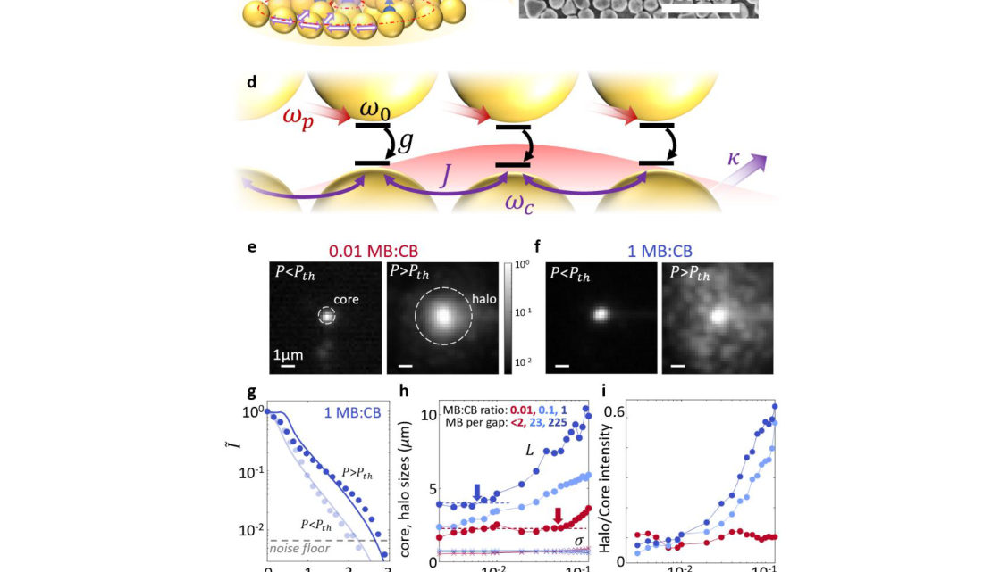
<figcaption class="paper-figure-caption"><b>Fig 1.</b> Fig.1. Synchronization of dipoles in plasmonic nanogaps. (a) Emission from array of nanoparticles pumped by tightly- focused 633 nm laser exciting core region which feeds surrounding halo. (b) Methylene blue (MB) emitter within CB[7] host forms optical dipole (blue) in nanogap between gold nanoparticles. (c) SEM of array of NPs. (d) Each emitter is incoherently pumped by a laser of frequency 𝜔𝑝 (red arrows) and after non-radiative relaxation emits into the cavity mode with light-matter coupling strength 𝑔. The cavity is composed of the collective plasmonic nanocavities of individual</figcaption>
</figure>
<figure class="paper-figure-card">
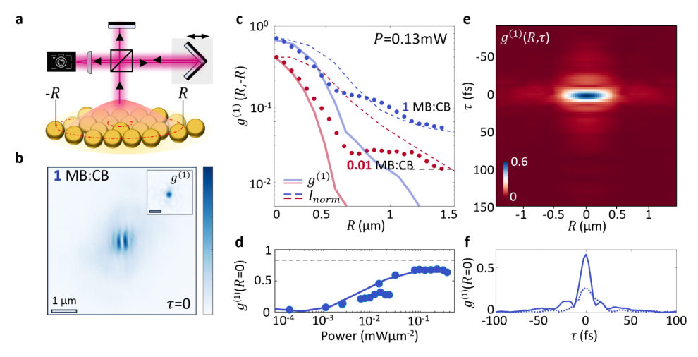
<figcaption class="paper-figure-caption"><b>Fig 2.</b> Fig.2. Spatial coherence of light emission. (a) Flipped Michelson interferometer measuring spatial visibility fringes of emission from the 2D NP layer. (b) Emission fringes from MB:CB = 1 sample at zero-delay (𝜏=0). Inset shows extracted image of 𝑔(1) spatial coherence, scale bar as in main image. (c) Decay of 𝑔(1) spatial coherence over radially averaged</figcaption>
</figure>
<figure class="paper-figure-card">
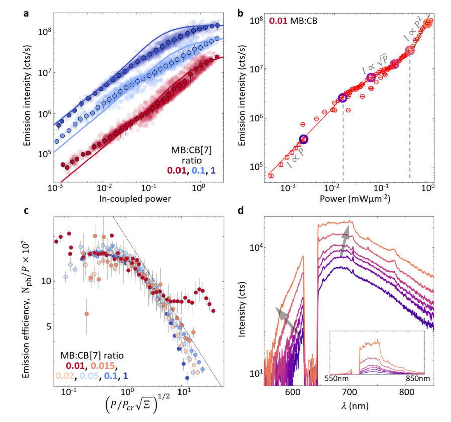
<figcaption class="paper-figure-caption"><b>Fig 3.</b> Fig.3. Nonlinear emission for increasing emitter concentration. (a) Integrated intensity of MB emission vs in-coupled power (details in SI Section S5) for increasing dye concentration, showing deviations from linear scaling for different regimes. Solid lines are theoretical predictions for the photon input-output curves. (b) Power dependence of emission intensity at one location showing transitions from linear to sublinear to super-linear regimes (solid lines indicate power laws as labelled). (c) Scaling of emitter efficiency (𝐼/𝑃) with increasing emitter density Ξ. Black line shows scaling as</figcaption>
</figure>
<figure class="paper-figure-card">
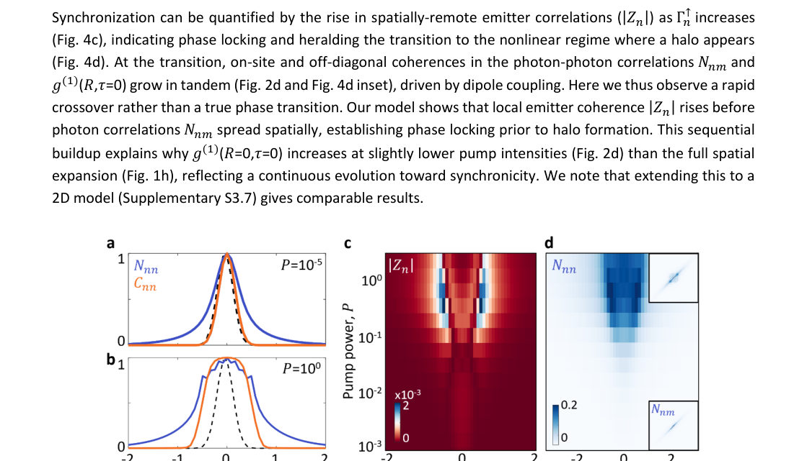
<figcaption class="paper-figure-caption"><b>Fig 4.</b> Fig.4. Spreading of correlations and coherence. (a,b) Theoretical model of normalized photon-emission profile (𝑁𝑛𝑛, blue) and on-site dipole correlations (𝐶𝑛𝑛, orange) for pump profile (black) at (a) low pump power 𝑃=10-5 and (b) at high pump power 𝑃 =100, for 𝑡 = 0.4 eV and Γ𝑒𝑒= 10-4 eV. (c) Model emitter-emitter correlations |𝑍𝑛| and (d) photon emission (𝑁𝑛𝑛) as a function of pump power and position 𝑅. Inset shows the normalized off-site photon-photon coherences (𝑁𝑛𝑚) for pump powers in (a) (bottom inset) and (b) (top inset). Vortices and non-equilibrium behaviour Spatial coherence arises from dipoles synchronizing their phases through evanescent coupling (set by 𝐽 and 𝑔 in Eqn. (1)) and...</figcaption>
</figure>
<figure class="paper-figure-card">
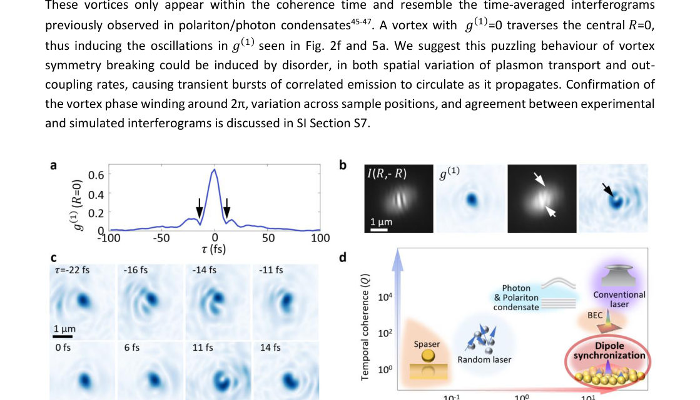
<figcaption class="paper-figure-caption"><b>Fig 5.</b> Fig.5. Spatio-temporal vortices forming as a function of delay time at pump power 𝑃=0.2 mW for MB:CB = 1 at different time delays 𝜏. (a) 𝑔(1)(𝑅= 0, 𝜏) coherence with minima corresponding to images below marked out. (b) Real-space Michelson interferogram intensity profile 𝐼(𝑅, −𝑅) and extracted 𝑔(1) profiles for image with a vortex and without.</figcaption>
</figure>
</div>

<p><strong>Summary.</strong> The research reports on achieving coherent dipole synchronization at room temperature using plasmonic nanocavity arrays. By combining experiments measuring spatial coherence with theoretical modeling of driven-dissipative dynamics, the authors demonstrate that phase locking occurs robustly despite high losses. This platform offers a novel route for studying quantum coherence in scalable, ambient photonic devices.</p>
<p><strong>Why it may be interesting.</strong> This work is highly relevant as it addresses driven-dissipative quantum phenomena (synchronization) in a solid-state, ambient environment. The distinction between this mechanism and traditional BEC/laser transitions provides new insights into open quantum systems dynamics.</p>
<details>
<summary>Detailed structure</summary>
<p><strong>Main problem.</strong> The research aims to demonstrate and characterize coherent dipole synchronization at room temperature within plasmonic nanocavity sheets, distinguishing this phenomenon from standard phase transitions.</p>
<p><strong>Main result.</strong> The system achieves robust spatial coherence and synchronization despite high dissipation and incoherent pumping, exhibiting a unique crossover behavior rather than a sharp phase transition. The emission profile shows expansion into a 'halo' region at high pump powers.</p>
<p><strong>Method.</strong> The study combines experimental measurements of spatial coherence ($g^{(1)}(R)$) using Michelson interferometry with theoretical modeling employing master equations and cumulant expansions.</p>
<p><strong>Model / system.</strong> The platform is locally-ordered plasmonic nanogap 2D arrays containing organic dye emitters (Methylene blue). The dynamics are modeled using a tight-binding Hamiltonian coupled to the cavity modes, governed by a master equation incorporating pumping and decay rates.</p>
<p><strong>Key observables.</strong> Spatial coherence $g^{(1)}(R)$, photon-photon correlations ($N_{nm}$), local emitter coherence ($\langle Z_n 
angle$), and emission intensity maps showing 'halo' formation.</p>
<p><strong>Important parameters / regimes.</strong> High light-matter coupling ($g > 100 	ext{ meV}$), high photon loss ($\kappa > 100 	ext{ meV}$), and the critical pump power ($P_{th}$) marking regime changes.</p>
<p><strong>Assumptions / limitations.</strong> The theoretical model relies on a second-order cumulant expansion, and the measurement of $g^{(1)}(R=0,	au=0)$ is noted to be an average over multiple nanogaps.</p>
<p><strong>Figures summary.</strong> Figures illustrate setup details, intensity maps showing halo formation (Fig. 1), spatial coherence decay profiles using a Michelson interferometer (Fig. 2), nonlinear scaling of emission power vs. pump strength (Fig. 3), and theoretical correlation spreading ($N_{nnn}$, $C_{nn}$) (Fig. 4).</p>
<p><strong>Paper structure.</strong> The paper progresses by establishing the physical system, detailing the governing master equation and measurement techniques, presenting results on coherence measurements and nonlinear scaling, and finally discussing advanced diagnostics like vortex detection to characterize the non-equilibrium nature of the synchronization.</p>
</details>
<details>
<summary>Abstract</summary>
<p>Plasmonic nanocavities enable the synchronization of spatially distant emissive dipoles through strong near-field coupling in sub-nm gaps. We report formation of a room-temperature synchronized dipole state in locally-ordered plasmonic nanogap 2D arrays under non-resonant continuous-wave pumping. Unlike lasers, photonic Bose-Einstein condensates, or exciton-polariton condensates, this system exhibits spatial coherence across the dipoles, while rapid radiative and non-radiative emission suppresses temporal photon coherence. A change of behaviour is observed with increasing pumping, marked by the spatial spread of g(1) coherence, but without spectral narrowing or directional emission. This driven-dissipative system exhibits fast temporal coherence decay and complex spatial correlations, offering a new platform for studying synchronization at room temperature. Combining ultralow mode volumes, high Purcell enhancement, and scalable ambient operation, it opens pathways for novel photonic and quantum technologies.</p>
</details>
<p><sub><a href="#top">↑ back to top</a></sub></p>

<p><a id="paper-2606.05837"></a></p>
<h3 id="odd-parity-magnons-in-the-haldane-hubbard-model-from-topological-exciton-condensation">⭐ <a href="http://arxiv.org/abs/2606.05837v1">Odd-parity magnons in the Haldane-Hubbard model from topological exciton condensation</a></h3>
<p><strong>Highlighted author(s):</strong> Johannes Knolle<br>
<strong>Authors:</strong> Rintaro Eto, Johannes Knolle<br>
<strong>Type:</strong> theory · <strong>Category:</strong> strongly correlated electrons · <strong>PDF:</strong> <a href="https://arxiv.org/pdf/2606.05837v1">https://arxiv.org/pdf/2606.05837v1</a><br>
<strong>Analysis basis:</strong> full PDF text, analyzed in chunks
<strong>Topic relevance:</strong> <code>analog quantum simulation</code> <strong>3/5</strong> · <code>exotic spin models in light-matter</code> <strong>3/5</strong> · <code>spintronics-quantum-optics interface</code> <strong>3/5</strong> · <code>Keldysh / 2PI / non-Gaussian methods</code> <strong>1/5</strong> · <code>driven-dissipative phase transition</code> <strong>1/5</strong></p>
<div class="figure-strip-hint">↔ Scroll figures horizontally</div>
<div class="paper-figures-scroll">
<figure class="paper-figure-card">
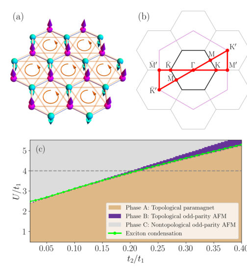
<figcaption class="paper-figure-caption"><b>Fig 1.</b> FIG. 1. (a) Schematic of the odd-parity-wave magnetism in the Haldane-Hubbard (HH) model. Bravais vectors are given by a1 = (1, 0), a2 = (−1/2, √</figcaption>
</figure>
<figure class="paper-figure-card">
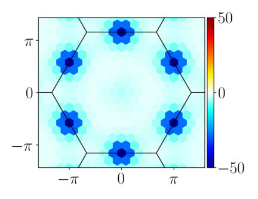
<figcaption class="paper-figure-caption"><b>Fig 2.</b> FIG. 3. Exciton Berry curvature of the lowest bands with C↑→↓(↓→↑) exc = −2 in the paramagnetic phase A at t2/t1 = 0.3, U/t1 = 4, and ϕ = π/2. Note that the Berry curvature distribution is identical for + −(↑→↓) and −+ (↓→↑) excitons. Black hexagon denotes the first Brillouin zone.</figcaption>
</figure>
<figure class="paper-figure-card">
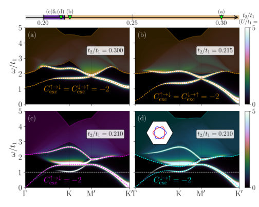
<figcaption class="paper-figure-caption"><b>Fig 3.</b> FIG. 2. (a),(b) Dynamical spin structure factor S (q, ω) = S +−(q, ω) + S −+(q, ω) of the HH model, overlaid with the TDHF spectra in the topological paramagnetic phase A. Colored dashed lines and shaded regions represent isolated collective modes and particle-hole continua, respectively. (c),(d) Same as (a),(b), but for the topological odd-parity-wave AFM phase B, together with the spin-resolved TDHF spectra. The inset in (d) shows the isoenergy contour of the TDHF spectrum at ω/t1 = 1, corresponding to the white dashed lines in (c) and (d). For all panels, U/t1 = 4 and ϕ = π/2. The values of t2/t1 are indicated in each panel and marked in the phase diagram at the top. Light gray, purple,...</figcaption>
</figure>
<figure class="paper-figure-card">
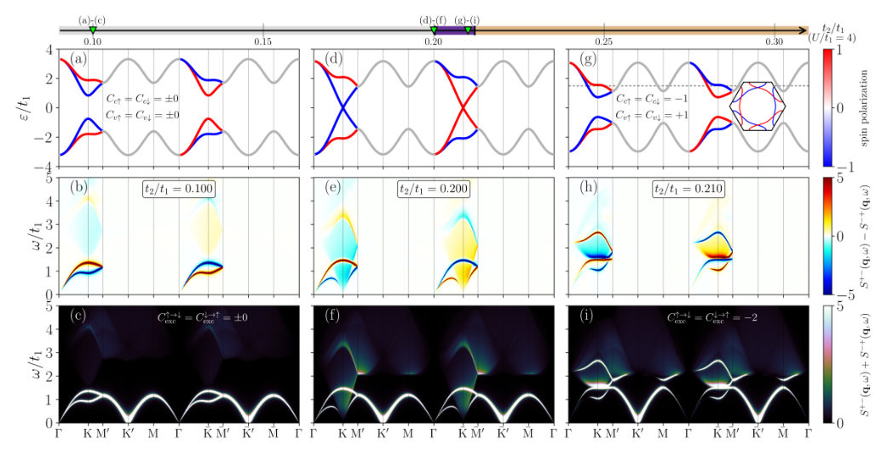
<figcaption class="paper-figure-caption"><b>Fig 4.</b> FIG. 4. (a),(d),(g) Electron bands near the nontopological-topological AFM phase boundary obtained with Hartree-Fock approximation. Red, blue and gray bands indicate up-spin, down-spin, and spin-degenerate ones, respectively. The inset in (g) shows the isoenergy contour of the electron bands at ε/t1 = 1.5, corresponding to the gray dashed line. (b),(e),(h) Difference in spin-resolved dynamical spin-structure factors S +−(q, ω) −S −+(q, ω). (c),(f),(i) Dynamical spin-structure factor S (q, ω) = S +−(q, ω) + S −+(q, ω). For all panels, U/t1 = 4 and ϕ = π/2. The value of t2/t1 is common to each column and is indicated in the corresponding panels as well as marked in the phase diagram at the...</figcaption>
</figure>
</div>

<p><strong>Summary.</strong> This work analyzes the Haldane-Hubbard model to show that topological excitons condense, driving the system into a novel odd-parity magnetic state. This resulting magnet exhibits characteristic f-wave magnon splitting, and the theory predicts how changes in electronic band topology govern the magnon's quantum properties.</p>
<p><strong>Why it may be interesting.</strong> The explicit connection drawn between topological exciton condensation in an itinerant model and the emergence of topologically non-trivial magnons is highly relevant to understanding emergent quantum phenomena in correlated materials.</p>
<details>
<summary>Detailed structure</summary>
<p><strong>Main problem.</strong> The study investigates the collective excitations (excitons and magnons) and the mechanism driving the transition into an odd-parity magnet within the Haldane-Hubbard model.</p>
<p><strong>Main result.</strong> The condensation of topological excitons drives the system into a collinear Néel state, realizing an odd-wave magnet characterized by f-wave magnon splitting. Furthermore, electron bandgap closing dictates changes in magnon topology and enhances spin splitting.</p>
<p><strong>Method.</strong> Theoretical analysis using Time-Dependent Hartree–Fock (TDHF) and Random Phase Approximation (RPA) to calculate exciton and magnon spectra.</p>
<p><strong>Model / system.</strong> The Haldane-Hubbard model is studied on a honeycomb lattice, incorporating nearest-neighbor ($t_1$) and next-nearest-neighbor hopping ($t_2$) with loop currents, alongside an onsite Hubbard repulsion ($U$).</p>
<p><strong>Key observables.</strong> Dynamical spin structure factor $S(q, \omega)$, exciton Berry curvature ($ ext{BC}$), magnon dispersion relation, and topological invariants (Chern numbers).</p>
<p><strong>Important parameters / regimes.</strong> Half-filled case; intermediate interaction regime ($U/t_1 = 4$); lattice geometry (honeycomb).</p>
<p><strong>Assumptions / limitations.</strong> The analysis relies on mean-field descriptions (TDHF, RPA) to describe the excitonic condensation transition.</p>
<p><strong>Figures summary.</strong> Figures illustrate $S(q, \omega)$ in paramagnetic and AFM phases, show exciton Berry curvature distribution, and map out electron band structures near phase boundaries.</p>
<p><strong>Paper structure.</strong> The paper systematically develops the theoretical framework by first establishing the model Hamiltonian, then using TDHF/RPA to calculate excitonic properties (including Chern numbers), demonstrating how exciton condensation drives the magnetic transition into the odd-parity magnon state, and finally analyzing the consequences of bandgap closing.</p>
</details>
<details>
<summary>Abstract</summary>
<p>Odd-wave magnets are the counterparts to even-wave altermagnets realizing odd-parity spin splitting. Normally discussed for noncollinear systems, they have recently been shown to appear in collinear magnetic states in the presence of loop currents. Here we study collective excitations of the paramagnetic and magnetic phase of the seminal Haldane-Hubbard model. We identify the existence topological excitons in the paramagnetic phase, and their condensation as the driving mechanism into the collinear Néel state. The latter realizes an odd-wave magnet with odd-parity magnons displaying a characteristic $f$-wave splitting. We further uncover that an electron bandgap closing ensures magnon bandgap closing causing a change in odd-parity magnon topology, as well as a drastically enlarged spin splitting. Our results establish the presence of topological excitons and odd-parity magnons in the Haldane-Hubbard, with potential realizations in Floquet-driven materials and cold atomic gases.</p>
</details>
<p><sub><a href="#top">↑ back to top</a></sub></p>

<p><a id="paper-2606.06259"></a></p>
<h3 id="non-equilibrium-thermodynamics-of-collapse-models-in-the-strongly-non-gaussian-regime"><a href="http://arxiv.org/abs/2606.06259v1">Non-equilibrium thermodynamics of collapse models in the strongly non-Gaussian regime</a></h3>
<p><strong>Authors:</strong> Pedro B. Melo, Pedro V. Paraguassú, Simone Artini, Gabriele Lo Monaco, Sandro Donadi, Mauro Paternostro<br>
<strong>Type:</strong> theory · <strong>Category:</strong> statistical mechanics · <strong>PDF:</strong> <a href="https://arxiv.org/pdf/2606.06259v1">https://arxiv.org/pdf/2606.06259v1</a><br>
<strong>Analysis basis:</strong> full PDF text, analyzed in chunks
<strong>Topic relevance:</strong> 🔥 <code>non-equilibrium dynamics</code> <strong>5/5</strong> · 🔥 <code>methods for driven-dissipative</code> <strong>4/5</strong> · 🔥 <code>non-equilibrium universality</code> <strong>4/5</strong> · <code>Keldysh / 2PI / non-Gaussian methods</code> <strong>3/5</strong> · <code>driven-dissipative phase transition</code> <strong>3/5</strong> · <code>scars &amp; prethermalization</code> <strong>2/5</strong> · <code>Frenkel-Kontorova</code> <strong>1/5</strong> · <code>correlated / nonlocal dissipation</code> <strong>1/5</strong> · <code>entanglement &amp; information structure</code> <strong>1/5</strong> · <code>quantum measurements</code> <strong>1/5</strong></p>
<div class="figure-strip-hint">↔ Scroll figures horizontally</div>
<div class="paper-figures-scroll">
<figure class="paper-figure-card">
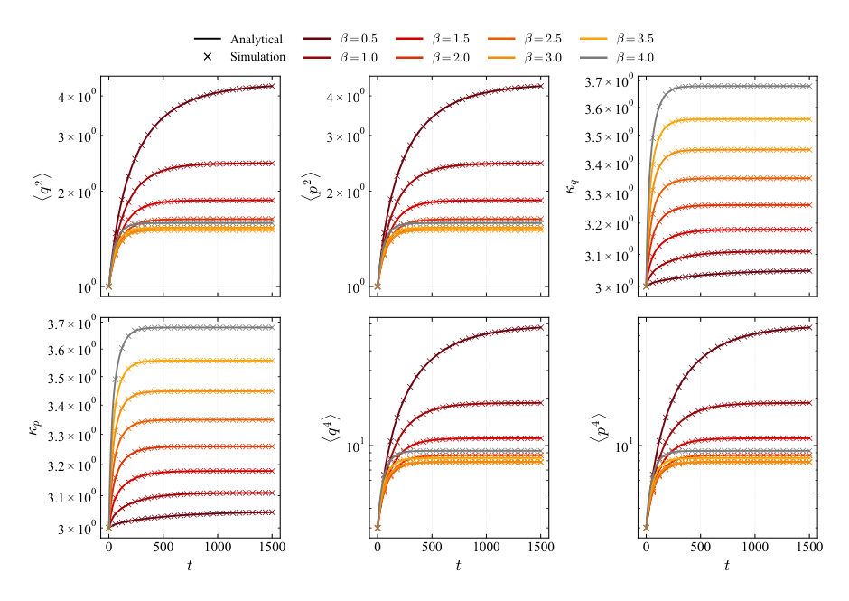
<figcaption class="paper-figure-caption"><b>Fig 1.</b> Figure 1. Time evolution of the non-zero moments for a particle in a harmonic trap governed by eq. (8). Solid lines represent the analytical simulation results for different values of β, while the markers (crosses) denote the numerical solutions derived from the system of ODEs. The graphs of κq and κp denote the kurtosis given by κq ≡⟨q4⟩/⟨q2⟩and κp ≡⟨p4⟩/⟨p2⟩. The steady-state regime is reached as t →∞, where the moments ⟨q2⟩, ⟨p2⟩, and ⟨q4⟩plateau at values determined by the competition between diffusion and dissipation.</figcaption>
</figure>
<figure class="paper-figure-card">
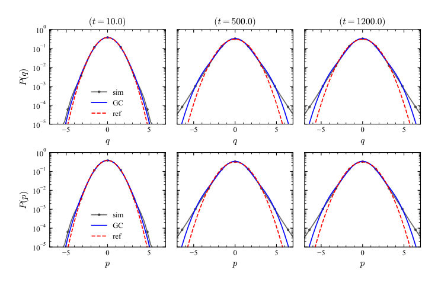
<figcaption class="paper-figure-caption"><b>Fig 2.</b> Figure 2. Temporal evolution of the marginal PDFs. The plots display projections (upper) onto the q and (lower) p axes for parameters m = ω = 1.0, R0 = 3.0, γ = 1.0, β = 4.0 and ℏ= kB = 1.0 in Log scale, computed using the Gram-Charlier approximation (solid line) and the reference Guassian marginals (dashed lines). Snapshots are taken at t = 10, t = 500, and t = 1200. At early times (t = 10), the function W(q, p) closely resembles a Gaussian distribution due to the initial conditions. As the system evolves, deviations from Gaussianity emerge, driven by non-zero fourth-order moments. This non-Gaussian behavior manifests as a modification of the distribution tails and an increase in the peak...</figcaption>
</figure>
<figure class="paper-figure-card">
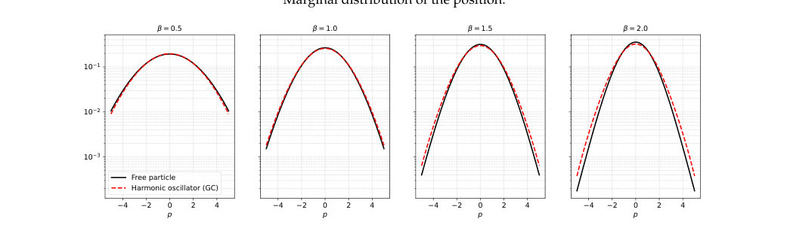
<figcaption class="paper-figure-caption"><b>Fig 3.</b> Figure 3. Comparison between the steady–state marginal PDF of the momentum as computed analytically for the free particle (solid line) and numerically for the harmonic oscillator (dashed line). The parameters chosen are m = ω = 1.0, R0 = 3, γ = 1, β = 2 and ℏ= kB = 1 and results are presented in Log scale. Interestingly, the harmonic oscillator and the free particle seem to share a similar marginal over p in the long time limit. It is also possible to see how, as the non–Gaussianty increases with β, the overlap between the two distributions become smaller.</figcaption>
</figure>
<figure class="paper-figure-card">
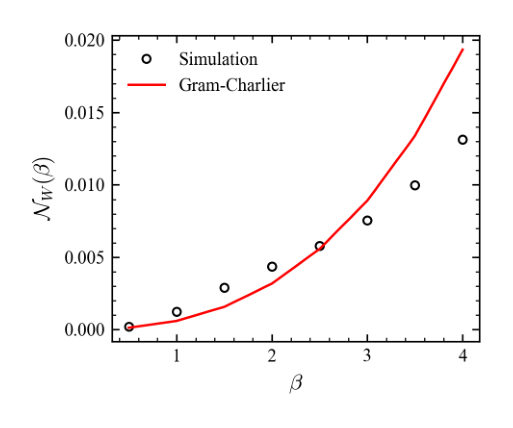
<figcaption class="paper-figure-caption"><b>Fig 4.</b> Figure 5. Quantitative analysis of the steady–state non- Gaussianity as characterized by the negentropy NW = K(W||Wref) for a range of β values. The system parameters are set to m = ω = 1, γ = 1, R0 = 3, and ℏ= kB = 1, with the system prepared in the ground state at t = 0. With this mea- sure, for small values of β the simulated steady–state is more non–Gaussian then the one obtained via GC expansion. For large values of the friction parameter the hierarchy is inverted.</figcaption>
</figure>
<figure class="paper-figure-card">
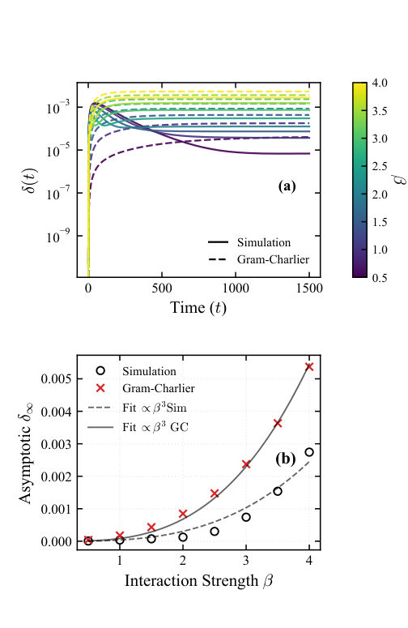
<figcaption class="paper-figure-caption"><b>Fig 5.</b> Figure 4. Quantitative analysis of the evolution of non- Gaussianity of the states δ[ρ] for a range of β values. The system parameters are set to m = ω = 1, γ = 1, R0 = 3, and ℏ= kB = 1, with the system prepared in the ground state at t = 0. (a) Time evolution of the non-Gaussianity for various dissipation parameters β ∈[0.5, 4.0]. During the tran- sient phase, δ[ρ] briefly grows larger than its final asymptotic value before decreasing. (b) The asymptotic non-Gaussianity δ[ρ∞] as a function of β. The GC method actually overestimates the non-Gaussianity of the state according to this measure. A polynomial fit of the data points reveals an exact cubic scaling behavior, δ[ρ∞] ∝β3, with a...</figcaption>
</figure>
</div>

<p><strong>Summary.</strong> This paper analyzes objective collapse models using Wigner phase-space methods to study their thermodynamics. It demonstrates that these systems reach a Non-Equilibrium Steady State rather than thermal equilibrium, and crucially shows that standard perturbative approximations fail under strong dissipation. The research confirms the thermodynamic consistency of the dissipative mechanism while quantifying non-Gaussian features.</p>
<p><strong>Why it may be interesting.</strong> This work directly bridges quantum foundations (measurement problem/collapse models) with non-equilibrium statistical mechanics by providing rigorous quantitative tools to analyze irreversible dynamics far from equilibrium.</p>
<details>
<summary>Detailed structure</summary>
<p><strong>Main problem.</strong> The study investigates the non-equilibrium thermodynamics of objective quantum collapse models, specifically addressing how dissipative mechanisms affect system dynamics in strongly non-Gaussian regimes.</p>
<p><strong>Main result.</strong> The system does not thermalize but settles into a Non-Equilibrium Steady State (NESS), and the asymptotic non-Gaussianity scales cubically with the dissipation parameter ($\delta \propto eta^3$).</p>
<p><strong>Method.</strong> The analysis employs the Wigner phase-space formalism, utilizing advanced numerical techniques like pseudo-spectral simulation to overcome the limitations of perturbative expansions in highly dissipative regimes.</p>
<p><strong>Model / system.</strong> The model concerns objective collapse mechanisms (like dDP and CSL) which modify standard quantum evolution via friction terms. The dynamics are tracked using the Wigner function evolution equation, moving beyond simple quadratic approximations.</p>
<p><strong>Key observables.</strong> Wigner entropy production rate ($\Pi(t)$), non-Gaussianity measure ($\delta[
ho]$), and time evolution of higher-order statistical moments (e.g., fourth moments).</p>
<p><strong>Important parameters / regimes.</strong> Dissipation parameter ($eta$), which dictates the strength of the friction mechanism, and the distinction between weak and strong non-Gaussian regimes.</p>
<p><strong>Assumptions / limitations.</strong> The primary assumption is that standard collapse models predict unphysical energy heating; the analysis assumes the validity of thermodynamic consistency checks like positive entropy production.</p>
<p><strong>Figures summary.</strong> Figures illustrate the temporal evolution of marginal PDFs showing fat tails, compare simulation results against approximate methods (like Gram-Charlier expansion), and confirm the cubic scaling of non-Gaussianity with $eta$.</p>
<p><strong>Paper structure.</strong> The paper progresses from establishing the modified master equations in phase space to deriving moment equations. It then contrasts perturbative approximations (GC) with full numerical simulations, culminating in the determination of the NESS properties and thermodynamic consistency checks.</p>
</details>
<details>
<summary>Abstract</summary>
<p>Standard objective collapse models offer a unified approach to the quantum measurement problem but predict an unphysical, indefinite increase in the energy of the system. The dissipative Diósi-Penrose (dDP) model resolves this heating issue by introducing a linear friction mechanism. However, this modification induces complex, non-Gaussian phase-space dynamics. We rigorously establish the thermodynamic consistency of this friction mechanism -- extended to the CSL model -- across both weakly and strongly non-Gaussian regimes. Using the Wigner phase-space formalism, we go significantly beyond the quadratic approximation and, to bypass the failure of perturbative methods under strong dissipation, introduce a novel exact pseudo-spectral simulation approach. Our analysis reveals that the system subjected to the dDP mechanism does not thermalize, but rather settles into a non-equilibrium steady-state (NESS) where the asymptotic non-Gaussianity scales as the third power of the dissipation parameter $β$. By evaluating the Wigner entropy production, we confirm the thermodynamic validity of the model and demonstrate that highly sensitive information-theoretic quantities require exact numerical methods to accurately capture the key non-Gaussian tails of the distribution.</p>
</details>
<p><sub><a href="#top">↑ back to top</a></sub></p>

<p><a id="paper-2606.05767"></a></p>
<h3 id="tight-relation-between-the-physical-effects-of-a-quantum-measurement-and-the-information-gained-about-an-observable"><a href="http://arxiv.org/abs/2606.05767v1">Tight relation between the physical effects of a quantum measurement and the information gained about an observable</a></h3>
<p><strong>Authors:</strong> Natsuki Ogo, Holger F. Hofmann<br>
<strong>Type:</strong> theory · <strong>Category:</strong> other · <strong>PDF:</strong> <a href="https://arxiv.org/pdf/2606.05767v1">https://arxiv.org/pdf/2606.05767v1</a><br>
<strong>Analysis basis:</strong> full PDF text, analyzed in chunks
<strong>Topic relevance:</strong> 🔥 <code>quantum measurements</code> <strong>5/5</strong> · 🔥 <code>measurement-induced transitions</code> <strong>4/5</strong> · <code>entanglement &amp; information structure</code> <strong>2/5</strong> · <code>Keldysh / 2PI / non-Gaussian methods</code> <strong>1/5</strong> · <code>correlated / nonlocal dissipation</code> <strong>1/5</strong> · <code>driven-dissipative phase transition</code> <strong>1/5</strong></p>
<div class="figure-strip-hint">↔ Scroll figures horizontally</div>
<div class="paper-figures-scroll">
<figure class="paper-figure-card">
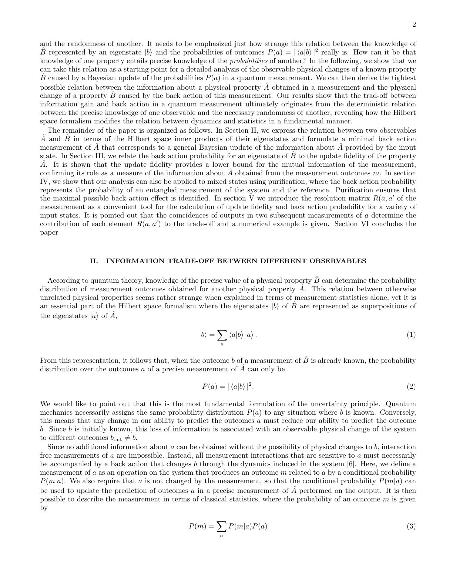
<figcaption class="paper-figure-caption"><b>Fig 1.</b> Low-resolution page preview, page 2</figcaption>
</figure>
<figure class="paper-figure-card">
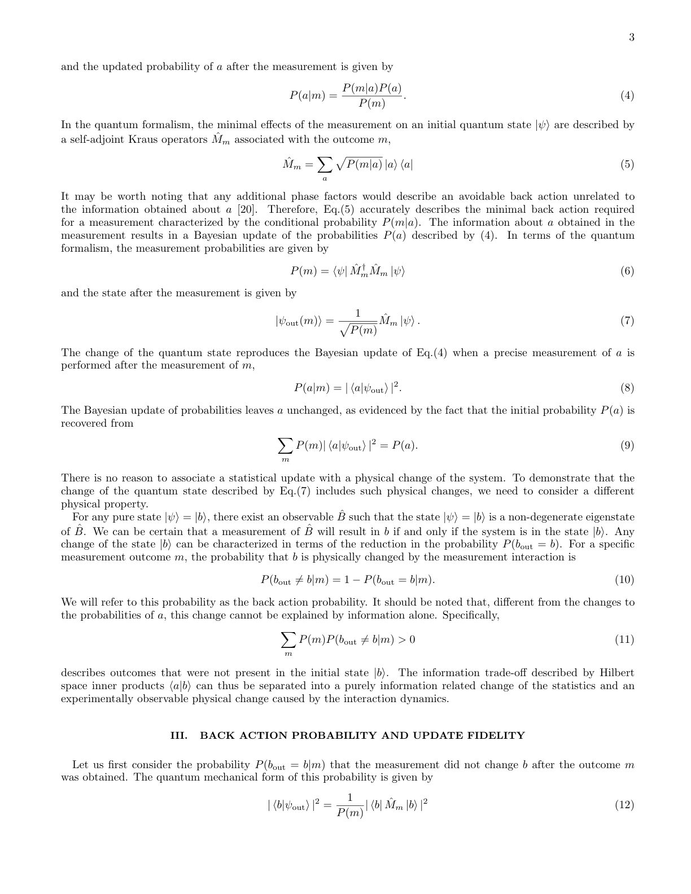
<figcaption class="paper-figure-caption"><b>Fig 2.</b> Low-resolution page preview, page 3</figcaption>
</figure>
<figure class="paper-figure-card">
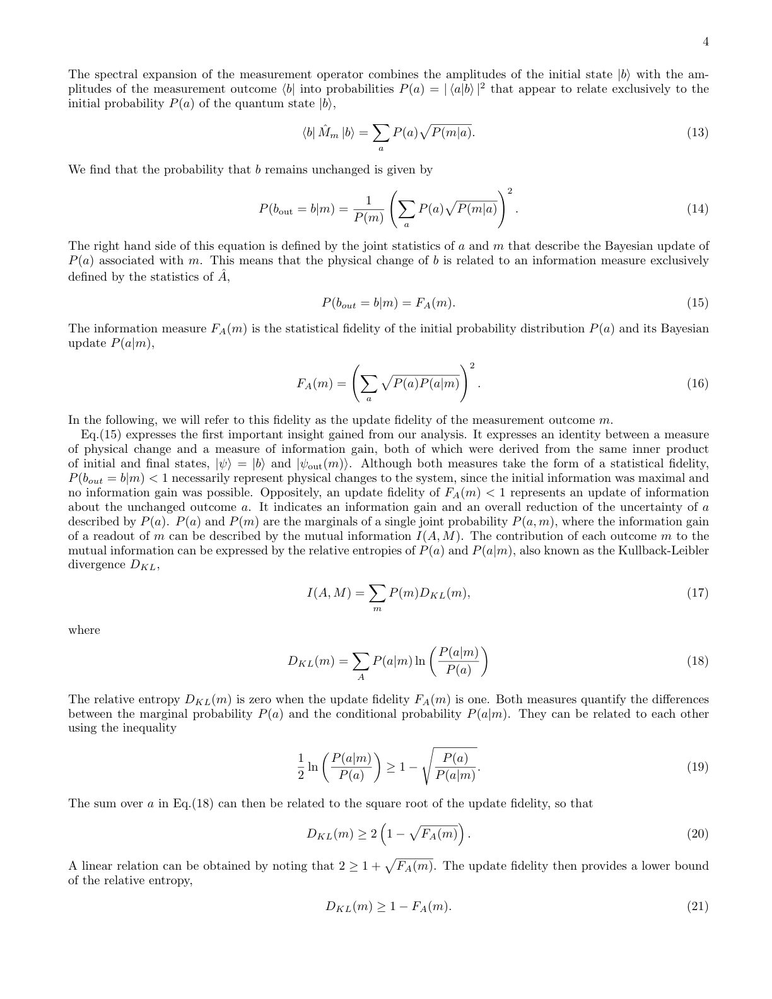
<figcaption class="paper-figure-caption"><b>Fig 3.</b> Low-resolution page preview, page 4</figcaption>
</figure>
<figure class="paper-figure-card">
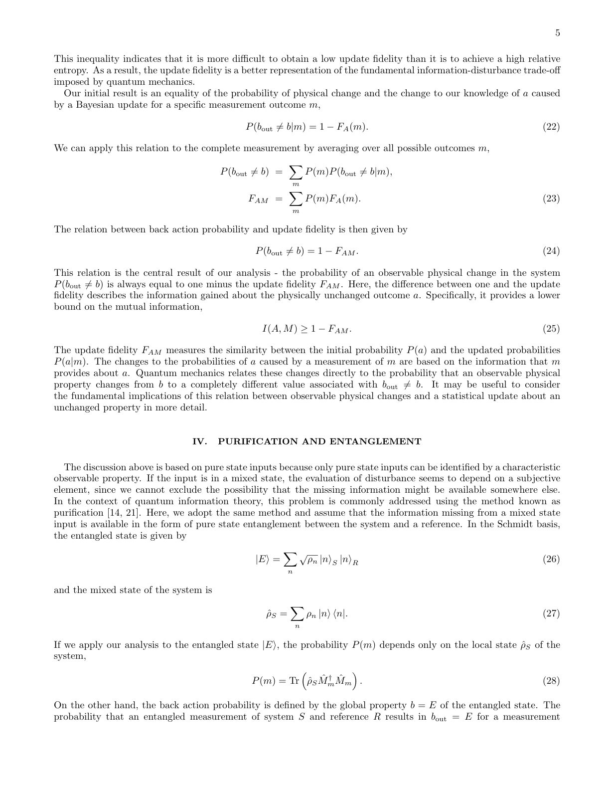
<figcaption class="paper-figure-caption"><b>Fig 4.</b> Low-resolution page preview, page 5</figcaption>
</figure>
<figure class="paper-figure-card">
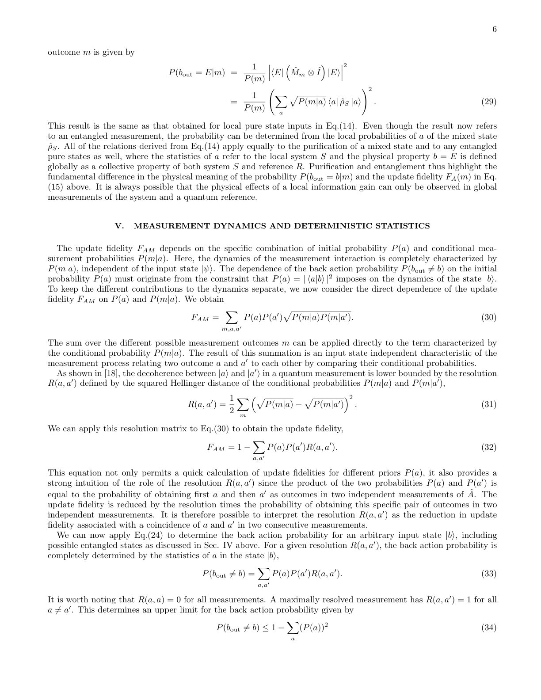
<figcaption class="paper-figure-caption"><b>Fig 5.</b> Low-resolution page preview, page 6</figcaption>
</figure>
</div>

<p><strong>Summary.</strong> This paper develops a formal theory connecting information acquisition during quantum measurements to the physical disturbance experienced by the system. It derives that the probability of observable change (back action) is mathematically equivalent to $1$ minus the total update fidelity measure derived from the measured outcomes. This provides a tight, quantitative link between knowledge and physical effect in quantum measurement theory.</p>
<p><strong>Why it may be interesting.</strong> This work provides a rigorous theoretical framework for understanding the fundamental trade-off between measurement precision (information gain) and disturbance (back action) in quantum mechanics, which is central to quantum measurement theory and open quantum systems.</p>
<details>
<summary>Detailed structure</summary>
<p><strong>Main problem.</strong> The paper establishes a precise, quantitative relationship between the information gained about one quantum observable ($\hat{A}$) during measurement and the resulting physical change (back action) on another observable ($\hat{B}$). It aims to resolve the conceptual difficulty of separating statistical knowledge updates from genuine dynamical state changes.</p>
<p><strong>Main result.</strong> The probability of physical back action ($P(   ext{bout} 
eq \mathbf{b})$) is shown to be fundamentally linked to, and in some cases equal to, $1$ minus the total measurement update fidelity ($1 - F_{AM}$).</p>
<p><strong>Method.</strong> The analysis employs Hilbert space formalism, utilizing Bayesian updates for information gain and Kraus operators/resolution matrices to quantify physical state evolution (back action).</p>
<p><strong>Model / system.</strong> The study analyzes general quantum systems undergoing projective measurements of two observables ($\hat{A}$ and $\hat{B}$) starting from a pure input state $|\mathbf{b}
angle$. The formalism is generalized to mixed states via purification.</p>
<p><strong>Key observables.</strong> Back action probability ($P(   ext{bout} 
eq \mathbf{b})$), Update Fidelity ($F_{AM}$), Mutual Information ($I(A, M)$), and Intrinsic Robustness ($I_A(\mathbf{b})$).</p>
<p><strong>Important parameters / regimes.</strong> The relationship is governed by the structure of the resolution matrix $R(a, a')$, which quantifies correlations between measurement outcomes.</p>
<p><strong>Assumptions / limitations.</strong> The analysis carefully distinguishes between statistical information updates (Bayesian) and physical state changes (back action), requiring careful handling within the Hilbert space framework.</p>
<p><strong>Paper structure.</strong> The paper builds from defining the measurement process, deriving expressions for back action using Kraus operators, establishing identities linking back action to statistical fidelity measures ($P(  ext{bout} 
eq b) = 1 - F_{AM}$), and finally quantifying this relationship using resolution matrices.</p>
</details>
<details>
<summary>Abstract</summary>
<p>The dynamics of quantum measurements defines a precise relation between the information gained about one physical property of a system and the observable changes in another physical property of the same system. Here, we express this relation in terms of the Hilbert space superpositions of the corresponding eigenstates and show how the probability of an observable physical change can be obtained from the Bayesian update of the probabilities associated with the information obtained in the measurement. Our analysis demonstrates that the superposition principle provides the tightest possible expression of the trade-off between information and back action in a quantum measurement.</p>
</details>
<p><sub><a href="#top">↑ back to top</a></sub></p>

<p><a id="paper-2606.06455"></a></p>
<h3 id="breakeven-demonstration-of-quantum-low-density-parity-check-codes"><a href="http://arxiv.org/abs/2606.06455v1">Breakeven demonstration of quantum low-density parity-check codes</a></h3>
<p><strong>Authors:</strong> Edwin Tham, Michael L. Goldman, Shantanu Debnath, Ashay N. Patel, Jyothi Saraladevi, Jason Nguyen, Erik Nielsen, Neal Pisenti, Kenneth Wright, John Gamble, Nicolas Delfosse<br>
<strong>Type:</strong> experiment · <strong>Category:</strong> quantum information and computing · <strong>PDF:</strong> <a href="https://arxiv.org/pdf/2606.06455v1">https://arxiv.org/pdf/2606.06455v1</a><br>
<strong>Analysis basis:</strong> full PDF text, analyzed in chunks
<strong>Topic relevance:</strong> 🔥 <code>QC/QI experiment</code> <strong>5/5</strong> · <code>quantum measurements</code> <strong>3/5</strong> · <code>measurement-induced transitions</code> <strong>1/5</strong></p>
<div class="figure-strip-hint">↔ Scroll figures horizontally</div>
<div class="paper-figures-scroll">
<figure class="paper-figure-card">
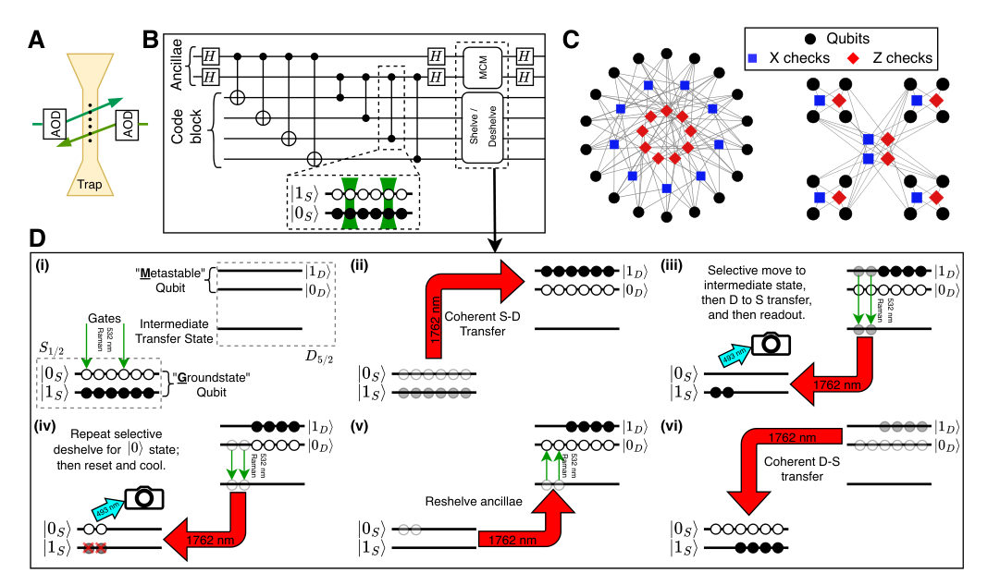
<figcaption class="paper-figure-caption"><b>Fig 1.</b> FIG. 1: A Ion trap depicted with six ions, with gates realized via counter-propagating Raman beams (green) steered from either side with acousto-optic deflectors (AOD). B An example syndrome circuit, measuring XXXX and ZZZZ stabilizers of the [[4, 2, 2]] code using two ancillae (top rails) prepared in |+⟩and measured in X. C Tanner graphs whose edges depict the highly non-trivial two-qubit gate connectivities required to implement syndrome circuits for a BB5 (left) and concatenated [[4, 2, 2]] (right) codes. D Sequence of physical operations implementing OMG-based mid-circuit measurements, with open (filled) circles representing the 0 (1) qubit state.</figcaption>
</figure>
<figure class="paper-figure-card">
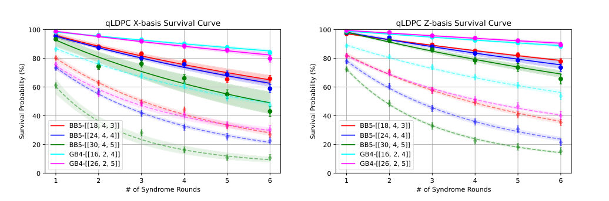
<figcaption class="paper-figure-caption"><b>Fig 2.</b> FIG. 2: Survival probabilities 1 −εL for the BB5 and GB4 codes versus number of syndrome cycles, for X (left) and Z (right) eigenstate memory experiments. Circles and solid curves indicate the probability that no logical fault occurred in any of the encoded logical qubits. Diamonds and dashed curves indicate the corresponding probabilities without decoding. Error bars around each point depict the 95% Wilson confidence intervals for our estimate of εL, and shaded bands show 95% confidence bands around each fitted curve.</figcaption>
</figure>
<figure class="paper-figure-card">
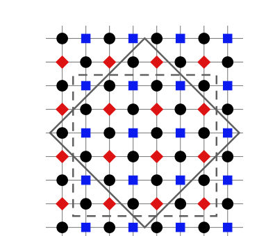
<figcaption class="paper-figure-caption"><b>Fig 3.</b> FIG. 3: A 2D lattice on which we depict the Tanner graphs of a standard [[18, 2, 3]] (dashed square) and rotated [[16, 2, 4]] (rotated square) toric codes. Although not drawn on a toric surface, the boundaries of the solid and dashed squares are understood to wrap around along opposing edges to satisfy the toric boundary conditions.</figcaption>
</figure>
<figure class="paper-figure-card">
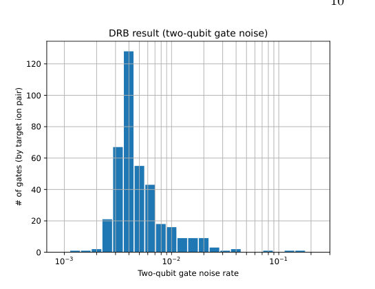
<figcaption class="paper-figure-caption"><b>Fig 4.</b> FIG. 4: Distribution of two-qubit (MS) gate noise as measured by DRB.</figcaption>
</figure>
<figure class="paper-figure-card">
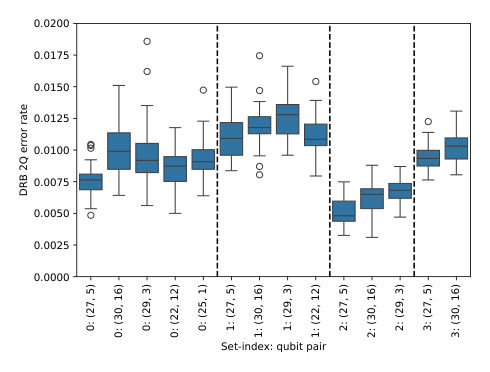
<figcaption class="paper-figure-caption"><b>Fig 5.</b> FIG. 5: Simultaneous two-qubit DRB results. Estimated MS gate error rate, aggregated over 36 runs, is shown as a function of qubit pair. In each run, simultaneous DRB is performed on the sets of 5, 4, 3, and then 2 disjoint pairs separated by the vertical dashed lines. An average error rate above the mean in Fig. 4 indicates the presence of crosstalk.</figcaption>
</figure>
</div>

<p><strong>Summary.</strong> This work demonstrates the feasibility of implementing advanced quantum error correction using qLDPC codes on a trapped-ion quantum computer. By leveraging a novel OMG architecture, the researchers achieved state-of-the-art logical error suppression and demonstrated breakeven performance for multiple code types. This marks a significant step toward building fault-tolerant quantum computers.</p>
<p><strong>Why it may be interesting.</strong> It provides a concrete, high-fidelity demonstration of fault tolerance on trapped ions, directly addressing hardware limitations (like ion transport) that typically constrain QEC demonstrations in this modality.</p>
<details>
<summary>Detailed structure</summary>
<p><strong>Main problem.</strong> Demonstrating high-rate quantum error correction (QEC) using qLDPC codes to achieve fault tolerance in a physical hardware platform.</p>
<p><strong>Main result.</strong> The experiment successfully demonstrated nine different QEC codes, achieving logical error rates significantly lower than previous demonstrations and showing breakeven performance where logical lifetimes approach or exceed physical qubit lifetimes.</p>
<p><strong>Method.</strong> Syndrome measurements are performed using controlled gates on ancilla qubits within a trapped-ion system, followed by decoding the syndrome data to estimate the logical error rate over multiple code cycles.</p>
<p><strong>Model / system.</strong> The platform is a trapped-ion quantum computer utilizing $^{133}	ext{Ba}^+$ ions. The novel Optical-Metastable-Ground (OMG) architecture enables mid-circuit measurement and reset without ion transport, allowing for the implementation of various code families.</p>
<p><strong>Key observables.</strong> Logical error rate ($\epsilon_L$), logical qubit lifetime ($T_{	ext{log}}$), physical coherence times ($T_1, T_2^*$).</p>
<p><strong>Important parameters / regimes.</strong> High encoding rates (e.g., qLDPC codes), $9	imes$ improvement in error suppression compared to superconducting qubits.</p>
<p><strong>Assumptions / limitations.</strong> The use of post-selection is employed for error handling, and the analysis relies on modeling noise channels based on measured gate fidelities.</p>
<p><strong>Figures summary.</strong> Figures illustrate the physical setup (ion trap), the sequence of operations for mid-circuit measurement (MCM), and simulated performance curves comparing logical vs. physical lifetimes under varying noise conditions.</p>
<p><strong>Paper structure.</strong> The paper details the theoretical framework of qLDPC codes, describes the experimental implementation using the OMG architecture for MCM, presents measurements of error rates over multiple cycles, and concludes by analyzing lifetime scaling and fidelity improvements via remapping.</p>
</details>
<details>
<summary>Abstract</summary>
<p>High-rate quantum low-density parity-check (qLDPC) codes are a leading candidate for fault-tolerant quantum computing. They feature higher encoding rates than planar alternatives such as the surface code, but their implementation often entails significant hardware hurdles like the need for long-range couplers. We leverage the flexibility of a trapped-ion quantum computer to demonstrate nine quantum error-correcting codes with starkly different qubit connectivity requirements on a single device without any hardware reconfiguration. These experiments span three families of quantum error-correcting codes: qLDPC codes, topological codes, and concatenated codes. With a qLDPC code encoding 4 logical qubits into 18 physical qubits, we achieve a logical error rate up to $9\times$ better than a previous demonstration of a similar code on superconducting solid-state qubits. Moreover, our implementation exhibits breakeven performance, with some instances achieving qubit lifetimes comparable to or slightly exceeding that of our trapped-ion qubits. We use a novel implementation of the optical-metastable-ground (OMG) architecture for addressable mid-circuit measurement and reset, which enables us to perform these experiments without any ion transport or dedicated coolant ions, requirements that typically consume a large fraction of the runtime or ion count of trapped-ion quantum computers.</p>
</details>
<p><sub><a href="#top">↑ back to top</a></sub></p>

<p><a id="paper-2606.05278"></a></p>
<h3 id="frustrated-superradiant-phases-in-one-and-two-dimensional-lattices"><a href="http://arxiv.org/abs/2606.05278v1">Frustrated superradiant phases in one- and two-dimensional lattices</a></h3>
<p><strong>Authors:</strong> Jongjun M. Lee, Myung-Joong Hwang<br>
<strong>Type:</strong> theory · <strong>Category:</strong> other · <strong>PDF:</strong> <a href="https://arxiv.org/pdf/2606.05278v1">https://arxiv.org/pdf/2606.05278v1</a><br>
<strong>Analysis basis:</strong> full PDF text, analyzed in chunks
<strong>Topic relevance:</strong> 🔥 <code>Dicke superradiance</code> <strong>4/5</strong> · 🔥 <code>analog quantum simulation</code> <strong>4/5</strong> · <code>Tavis-Cummings &amp; cavity-many-emitter</code> <strong>3/5</strong> · <code>correlated cavity matter</code> <strong>3/5</strong> · <code>driven-dissipative phase transition</code> <strong>3/5</strong> · <code>exotic spin models in light-matter</code> <strong>2/5</strong> · <code>methods for driven-dissipative</code> <strong>2/5</strong> · <code>non-equilibrium universality</code> <strong>2/5</strong> · <code>superradiant laser</code> <strong>2/5</strong> · <code>Frenkel-Kontorova</code> <strong>1/5</strong> · <code>Keldysh / 2PI / non-Gaussian methods</code> <strong>1/5</strong> · <code>correlated / nonlocal dissipation</code> <strong>1/5</strong> · <code>entanglement &amp; information structure</code> <strong>1/5</strong> · <code>non-equilibrium dynamics</code> <strong>1/5</strong></p>
<div class="figure-strip-hint">↔ Scroll figures horizontally</div>
<div class="paper-figures-scroll">
<figure class="paper-figure-card">
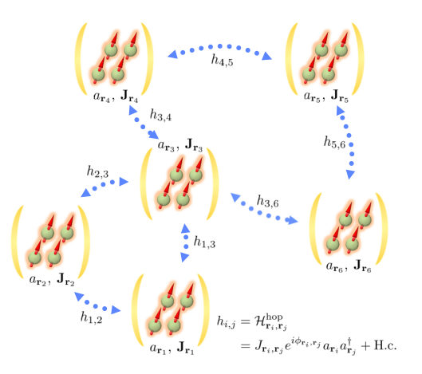
<figcaption class="paper-figure-caption"><b>Fig 1.</b> FIG. 1. Schematic illustration of the Dicke lattice model. An example lattice that consists of six sites. Each node at ri represents a Dicke model where a single cavity mode ari is coupled to the collective spin Jri. The blue dotted arrow de- notes the connectivity. hi,j denotes the hopping Hamiltonian Hhop ri,rj, which describes the photon hopping between site ri and site rj with the strength Jri,rj and the phase ϕri,rj.</figcaption>
</figure>
<figure class="paper-figure-card">
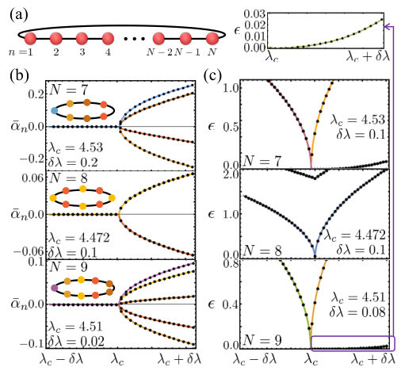
<figcaption class="paper-figure-caption"><b>Fig 2.</b> FIG. 2. Schematic illustration and numerical results for the simple Dicke chain model. (a) A schematic of the model con- sisting of N sites with the periodic boundary condition. Each red circle represents the Dicke model with a macroscopic num- ber of spins and a single cavity mode. (b) The order parameter ¯αn at site n is plotted as a function of the coupling strength λ, with λc denoting the critical coupling strength at which the superradiant phase transition occurs. The insets illustrate the spatial distribution in the superradiant phase in real space. (c) The excitation energy ϵ is shown along the coupling strength λ, and a low-lying state of N = 9 is highlighted in the purple box at a...</figcaption>
</figure>
<figure class="paper-figure-card">
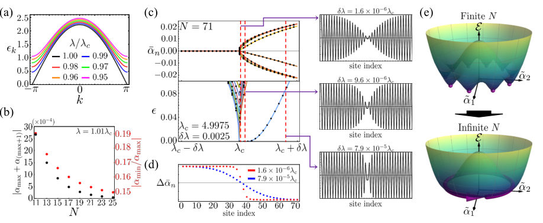
<figcaption class="paper-figure-caption"><b>Fig 3.</b> FIG. 3. Numerical results for the simple Dicke chain model. (a) Excitation energy ϵk as a function of momentum k for various coupling strengths in the normal phase, evaluated for a large system size. (b) Comparison of the order parameter across different system sizes. Black dots represent the amplitude difference between nearest neighbors, while red dots indicate the ratio between the maximum and minimum amplitudes of the order parameter, αmax and αmin. (c) Order parameter and excitation energy as functions of the coupling strength for a chain of 71 sites. For selected coupling strengths marked by the dashed red lines, the real-space distribution of the order parameter is shown. (d)...</figcaption>
</figure>
<figure class="paper-figure-card">
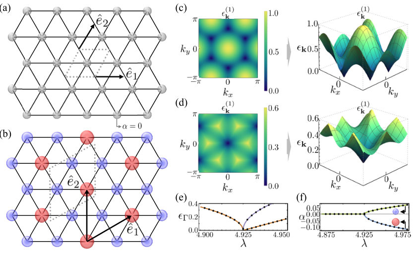
<figcaption class="paper-figure-caption"><b>Fig 4.</b> FIG. 4. Schematics and numerical results for the infinite-sized Dicke triangular lattice model are shown. Schematic illustrations show the Dicke triangular lattice model in (a) the normal phase and (b) the superradiant phase, with circle size and color indicating the amplitude and sign of the order parameter, respectively. In (a), the gray dashed line and black arrows represent the minimal unit cell and the lattice vector of the triangular lattice. In (b), the gray dashed line and black arrows denote the extended unit cell, which includes three sublattices, along with the lattice vector. The excitation energy band is shown relative to the critical coupling strength, using (c) the minimal...</figcaption>
</figure>
<figure class="paper-figure-card">
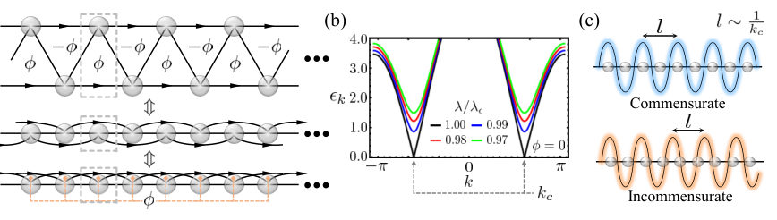
<figcaption class="paper-figure-caption"><b>Fig 5.</b> FIG. 5. Schematic and numerical results for the Dicke ladder model. (a) Three equivalent representations of the Dicke ladder model, where each gray circle corresponds to a Dicke model. The black arrow indicates the gauge field direction of the magnetic flux. (b) Excitation energy ϵk plotted in momentum space for various coupling strengths λ. (c) Schematic illustrations showing cases where the order parameter configuration is commensurate (top) and incommensurate (bottom) with the lattice structure.</figcaption>
</figure>
</div>

<p><strong>Summary.</strong> The paper investigates superradiant phase transitions in frustrated Dicke lattice models. It demonstrates that geometric frustration leads to density-wave ordering and predicts the emergence of a Nambu-Goldstone mode near criticality by analyzing the excitation spectrum. This establishes a new theoretical framework for understanding symmetry breaking in coupled quantum emitter arrays.</p>
<p><strong>Why it may be interesting.</strong> This work bridges quantum optics (Dicke model) with fundamental condensed matter concepts like frustration and symmetry breaking, providing concrete theoretical predictions for emergent gapless modes in engineered light-matter arrays.</p>
<details>
<summary>Detailed structure</summary>
<p><strong>Main problem.</strong> The central problem is understanding how geometric frustration and symmetry breaking govern collective behavior in quantum many-body systems, specifically focusing on superradiant phase transitions.</p>
<p><strong>Main result.</strong> Frustration drives photonic density-wave ordering, leading to emergent Nambu-Goldstone modes near criticality, which can be predicted by analyzing the excitation spectrum rather than energy minimization.</p>
<p><strong>Method.</strong> The work employs mean-field theory combined with a detailed analysis of quantum fluctuations around the mean-field solution, extending techniques from lattice Hamiltonians and Ginzburg-Landau frameworks.</p>
<p><strong>Model / system.</strong> The primary model is arrays of coupled Dicke models on periodic lattices (1D and 2D). The Hamiltonian includes local light-matter coupling terms ($\lambda$) and hopping interactions ($J$), allowing for the study of superradiance in engineered quantum optical systems.</p>
<p><strong>Key observables.</strong> Superradiant phase transition point, photonic density-wave ordering, Nambu-Goldstone mode emergence (gapless excitation), quasi-periodic order, and critical exponents ($\gamma_F$).</p>
<p><strong>Important parameters / regimes.</strong> Strong light-matter coupling regime; lattice size parity ($N$ even vs. odd); synthetic magnetic flux ($\phi_{r,r'}$).</p>
<p><strong>Assumptions / limitations.</strong> The analysis often relies on approximating the system by analyzing the excitation spectrum of the symmetric phase to bypass computationally prohibitive energy minimization.</p>
<p><strong>Figures summary.</strong> Figures illustrate the model setup (Dicke lattice), show order parameter evolution across different coupling strengths ($\lambda$), and plot the excitation energy ($\epsilon$) revealing both standard mean-field scaling and anomalous, size-dependent critical exponents for odd $N$.</p>
<p><strong>Paper structure.</strong> The paper progresses from defining the general Dicke lattice model to analyzing the 1D chain case by examining parity dependence (even vs. odd N), deriving the anomalous critical exponent, and finally generalizing the findings to show the emergence of a true Nambu-Goldstone mode in the thermodynamic limit.</p>
</details>
<details>
<summary>Abstract</summary>
<p>Understanding how frustration and symmetry breaking shape collective behavior is a central problem in quantum many-body systems. In this work, we investigate this problem in large one- and two-dimensional arrays of coupled Dicke models on a periodic lattice, where strong light-matter coupling gives rise to a superradiant phase and competition between neighboring order parameters induces spontaneous translational symmetry breaking. Such Dicke lattice models constitute a fundamentally new class of quantum many-body systems, as they simultaneously realize the thermodynamic limit associated with the lattice size and an intrinsic thermodynamic limit arising from collective on-site interactions with quantum emitters. We show that frustration drives photonic density-wave ordering, and that the resulting broken periodicity can be predicted from the excitation spectrum of the symmetric phase, without requiring computationally prohibitive thermodynamic energy minimization. Furthermore, we demonstrate that an emergent Nambu-Goldstone mode arises near the critical point in a one-dimensional chain despite the presence of only discrete symmetry, and uncover the mechanism that enables this otherwise forbidden gapless excitation. We also find quasi-periodic ordering in the superradiant phase, reminiscent of quasicrystals, and demonstrate that synthetic magnetic flux provides a powerful knob to control the nature of translational symmetry breaking. Our results establish a new direction in quantum many-body physics where the coexistence of local and global thermodynamic limits gives rise to unconventional symmetry breaking and emergent collective behavior.</p>
</details>
<p><sub><a href="#top">↑ back to top</a></sub></p>

<p><a id="paper-2606.05815"></a></p>
<h3 id="engineered-dissipation-for-faster-adiabatic-state-preparation"><a href="http://arxiv.org/abs/2606.05815v1">Engineered dissipation for faster adiabatic state preparation</a></h3>
<p><strong>Authors:</strong> Yuanyang Zhou, Biao Wu<br>
<strong>Type:</strong> theory · <strong>Category:</strong> other · <strong>PDF:</strong> <a href="https://arxiv.org/pdf/2606.05815v1">https://arxiv.org/pdf/2606.05815v1</a><br>
<strong>Analysis basis:</strong> full PDF text, analyzed in chunks
<strong>Topic relevance:</strong> 🔥 <code>methods for driven-dissipative</code> <strong>4/5</strong> · <code>analog quantum simulation</code> <strong>3/5</strong> · <code>correlated / nonlocal dissipation</code> <strong>3/5</strong> · <code>driven-dissipative phase transition</code> <strong>3/5</strong> · <code>exotic spin models in light-matter</code> <strong>3/5</strong> · <code>non-equilibrium dynamics</code> <strong>3/5</strong> · <code>Keldysh / 2PI / non-Gaussian methods</code> <strong>2/5</strong> · <code>non-equilibrium universality</code> <strong>2/5</strong> · <code>Kondo &amp; dissipative impurity</code> <strong>1/5</strong> · <code>correlated cavity matter</code> <strong>1/5</strong> · <code>entanglement &amp; information structure</code> <strong>1/5</strong> · <code>measurement-induced transitions</code> <strong>1/5</strong> · <code>quantum measurements</code> <strong>1/5</strong> · <code>spintronics-quantum-optics interface</code> <strong>1/5</strong></p>
<div class="figure-strip-hint">↔ Scroll figures horizontally</div>
<div class="paper-figures-scroll">
<figure class="paper-figure-card">
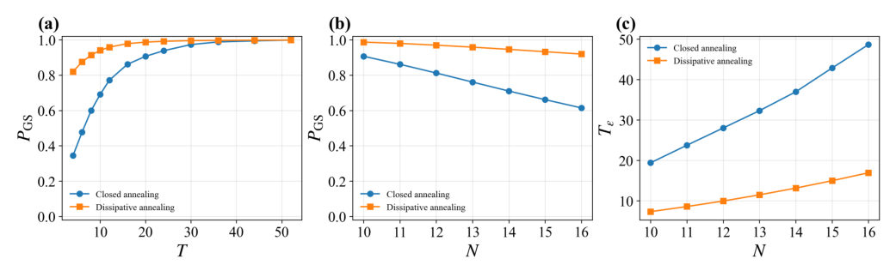
<figcaption class="paper-figure-caption"><b>Fig 1.</b> FIG. 1. Numerical results for TFIM. (a) Final ground-state probability PGS as a function of the total annealing time T for N = 10. The dissipative protocol reaches high success probability at shorter annealing times than closed-system annealing. (b) PGS as a function of system size N at fixed T = 20. The closed-system success probability decreases with increasing N, while the dissipative protocol remains more robust. (c) Threshold annealing time Tε required to reach PGS ≥0.90. The engineered dissipative protocol substantially reduces the required runtime over the simulated system sizes. We set J = 1, h = 0.3, and Γ = 3.</figcaption>
</figure>
<figure class="paper-figure-card">
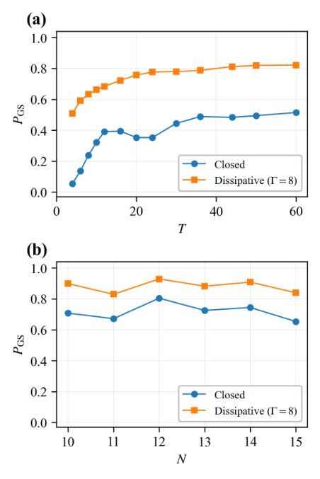
<figcaption class="paper-figure-caption"><b>Fig 2.</b> FIG. 2. Numerical results for random spin-glass instances. (a) Disorder-averaged final ground-state probability PGS as a function of the total annealing time T for system size N = 10. The dissipative protocol reaches a higher success probability than closed-system annealing over the simulated time range. (b) Disorder-averaged PGS as a function of system size N at a fixed annealing time of T = 60. For each data point, the average is taken over 10 independent random disorder instances. The engineered downward relaxation rate is set to Γ = 8.</figcaption>
</figure>
<figure class="paper-figure-card">
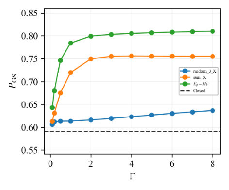
<figcaption class="paper-figure-caption"><b>Fig 3.</b> FIG. 3. Disorder-averaged final ground-state probability PGS as a function of the engineered downward relaxation strength Γ for different system-bath coupling operators A. The performance is evaluated on random spin-glass instances with system size N = 10 at a fixed annealing time T = 50. Three coupling configurations are compared: the full adi- abatic deformation A = Hp −Hb (green dots), a globally weighted sum of local transverse fields A = P</figcaption>
</figure>
<figure class="paper-figure-card">
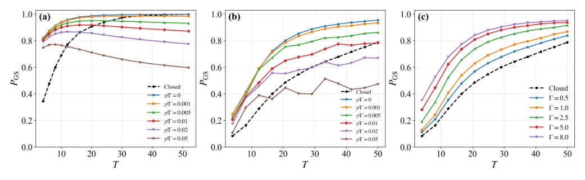
<figcaption class="paper-figure-caption"><b>Fig 4.</b> FIG. 4. Finite-temperature robustness of the engineered dissipative protocol and the effect of relaxation strength. (a) Final ground-state probability PGS for the TFIM as a function of the total annealing time T for several upward/downward rate ratios r = γ/Γ. The case r = 0 corresponds to the ideal zero-temperature filtered reservoir, and the downward relaxation rate is fixed at Γ = 3. (b) Disorder-averaged PGS for random spin-glass instances as a function of T under the same values of r with Γ = 3. (c) Disorder-averaged PGS for random spin-glass instances as a function of T for various downward relaxation rates Γ (ranging from 0.5 to 8.0) under a fixed upward thermal excitation rate γ =...</figcaption>
</figure>
</div>

<p><strong>Summary.</strong> The paper introduces an engineered dissipative protocol that uses structured reservoirs to actively suppress nonadiabatic leakage during slow quantum state preparation. By continuously relaxing leaked population back to the ground state, it improves the required annealing time scaling from $O(\Delta^{-2})$ to $O(\Delta^{-1})$. This technique is shown to be robust and applicable to complex disordered systems like spin glasses.</p>
<p><strong>Why it may be interesting.</strong> This work directly addresses open quantum system dynamics in condensed matter contexts (like superconducting circuits or magnetic materials) by providing a concrete method to overcome fundamental limitations imposed by spectral gaps during adiabatic evolution.</p>
<details>
<summary>Detailed structure</summary>
<p><strong>Main problem.</strong> Adiabatic state preparation is slowed by nonadiabatic leakage near small spectral gaps, especially in complex systems like spin glasses.</p>
<p><strong>Main result.</strong> Engineered dissipation can improve the required annealing time scaling from $O(\Delta^{-2})$ to $O(\Delta^{-1})$, accelerating ground-state preparation significantly.</p>
<p><strong>Method.</strong> The authors propose and analyze an engineered dissipative protocol using a filtered reservoir, modeled via the Lindblad master equation, which induces downward transitions while keeping the ground state dark.</p>
<p><strong>Model / system.</strong> The analysis uses effective two-level models initially but generalizes to complex systems like the Transverse Field Ising Model (TFIM) and random spin glasses. The dynamics are governed by a master equation incorporating both unitary evolution and engineered dissipation terms.</p>
<p><strong>Key observables.</strong> Final ground-state probability ($P_{GS}$), required annealing time threshold ($T_\epsilon$), excited-state population, and coherence.</p>
<p><strong>Important parameters / regimes.</strong> Minimum spectral gap ($\Delta$), engineered relaxation rate ($\Gamma$), thermal excitation ratio ($r = \gamma/\Gamma$), and system size ($N$).</p>
<p><strong>Assumptions / limitations.</strong> The analysis relies on the Born-Markov approximation, secular approximations, and assumes that the engineered reservoir can effectively suppress nonadiabatic leakage.</p>
<p><strong>Figures summary.</strong> Figures compare $P_{GS}$ vs. time/size for dissipative vs. closed-system protocols (TFIM); they also show robustness against finite temperature variations ($r$) and dependence on dissipation strength ($\Gamma$).</p>
<p><strong>Paper structure.</strong> The paper progresses from the general two-level model analysis to applying the technique to complex, disordered systems like spin glasses, systematically analyzing scaling laws and the impact of thermal noise.</p>
</details>
<details>
<summary>Abstract</summary>
<p>Adiabatic state preparation is often slowed by nonadiabatic leakage near small spectral gaps. We propose an engineered dissipative protocol that uses a filtered reservoir to induce predominantly downward transitions in the instantaneous energy eigenbasis while leaving the instantaneous ground state dark. The leaked population generated by nonadiabatic driving is therefore continuously relaxed back toward the low-energy sector. An effective avoided-crossing analysis shows that in the regime where the engineered relaxation strength is much larger than the minimum gap, the runtime scaling can improve from the closed-system behavior $\mathcal{O}(Δ^{-2})$ to $\mathcal{O}(Δ^{-1})$ Finite-temperature upward transitions introduce a thermal error floor, but the enhancement survives when this heating rate remains below the target error tolerance. Numerical results show improved ground-state preparation over closed-system annealing. We also discuss a possible superconducting-circuit implementation using structured bosonic reservoirs.</p>
</details>
<p><sub><a href="#top">↑ back to top</a></sub></p>

<p><a id="paper-2606.05303"></a></p>
<h3 id="krylov-complexity-flat-bands-and-carroll-breaking-deformations"><a href="http://arxiv.org/abs/2606.05303v1">Krylov Complexity: Flat bands and Carroll breaking deformations</a></h3>
<p><strong>Authors:</strong> Aritra Banerjee, Arpan Bhattacharyya, Rudranil Basu, Sayan Das<br>
<strong>Type:</strong> theory · <strong>Category:</strong> other · <strong>PDF:</strong> <a href="https://arxiv.org/pdf/2606.05303v1">https://arxiv.org/pdf/2606.05303v1</a><br>
<strong>Analysis basis:</strong> full PDF text, analyzed in chunks
<strong>Topic relevance:</strong> 🔥 <code>analog quantum simulation</code> <strong>4/5</strong> · 🔥 <code>non-equilibrium dynamics</code> <strong>4/5</strong> · <code>Keldysh / 2PI / non-Gaussian methods</code> <strong>3/5</strong> · <code>driven-dissipative phase transition</code> <strong>3/5</strong> · <code>entanglement &amp; information structure</code> <strong>3/5</strong> · <code>methods for driven-dissipative</code> <strong>3/5</strong> · <code>correlated / nonlocal dissipation</code> <strong>2/5</strong> · <code>non-equilibrium universality</code> <strong>2/5</strong> · <code>Kondo &amp; dissipative impurity</code> <strong>1/5</strong> · <code>correlated cavity matter</code> <strong>1/5</strong> · <code>scars &amp; prethermalization</code> <strong>1/5</strong></p>
<div class="figure-strip-hint">↔ Scroll figures horizontally</div>
<div class="paper-figures-scroll">
<figure class="paper-figure-card">
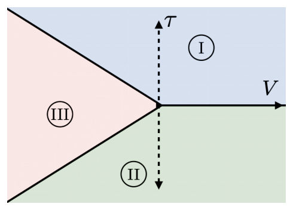
<figcaption class="paper-figure-caption"><b>Fig 1.</b> FIG. 1: The phase plot corresponding to the Hamiltonian (10). Regions I, II, and III are, respectively, the Vanilla-β, Vanilla-α, and Exotic phases. The discussion in the main text focuses on the τ &gt; 0 side, where the Vanilla-β phase meets the Exotic phase at V = −4τ.</figcaption>
</figure>
<figure class="paper-figure-card">
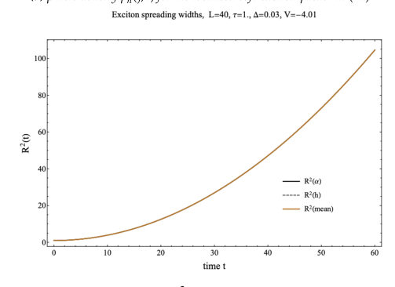
<figcaption class="paper-figure-caption"><b>Fig 2.</b> FIG. 2: Real-space propagation of the soft half-filled exciton near the Carroll critical line. The calculation is performed in the projected one-exciton subspace |m, n⟩= α† mβn|Ψβ⟩for L = 40, τ = 1, ∆= 0.03, and V = −4.01. The soft off-site exciton has energy scale 4τ + V, while the deformation H∆supplies a finite propagation velocity. The heat map in panel (a) shows the ballistic spreading of the β hole, and panel (b) shows the corresponding growth of the second moment. This provides a real-space diagnostic of the same Carroll-breaking mechanism that later drives Krylov-space spreading.</figcaption>
</figure>
<figure class="paper-figure-card">
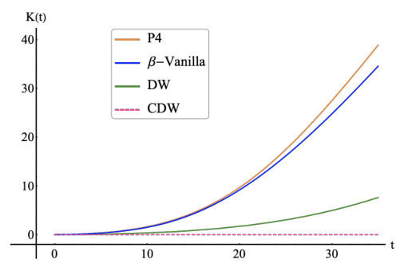
<figcaption class="paper-figure-caption"><b>Fig 3.</b> FIG. 3: Krylov complexity growth for L = 16 rungs, i.e. 32 ladder sites. ∆= 0.01. For the Vanilla-reference all-β quench we use V = −4τ−ϵ, while for the Exotic-reference doublon/empty quenches we use V = −4τ+ϵ. We chose τ = 1 and ϵ = 10−4. The Lanczos calculation is performed in the exact fixed-(No, Ne) parity block described in Appendix D.</figcaption>
</figure>
<figure class="paper-figure-card">
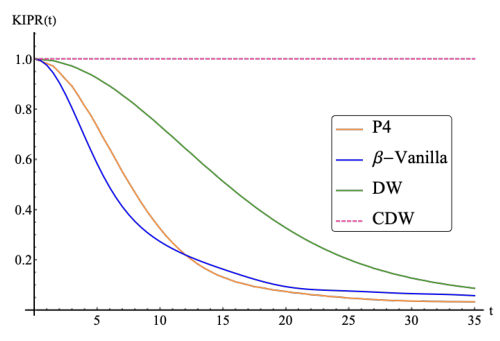
<figcaption class="paper-figure-caption"><b>Fig 4.</b> FIG. 4: Early time KIPR for the four representative states. Other physical parameters are same as Figure (3). For the Vanilla quench, the KIPR saturates at a comparatively lower value, indicating strong spreading in Krylov space. By contrast, the P4 state saturation value goes even lower, consistent with the discussion we have had in the text. DW states as usual take a middle path.</figcaption>
</figure>
<figure class="paper-figure-card">
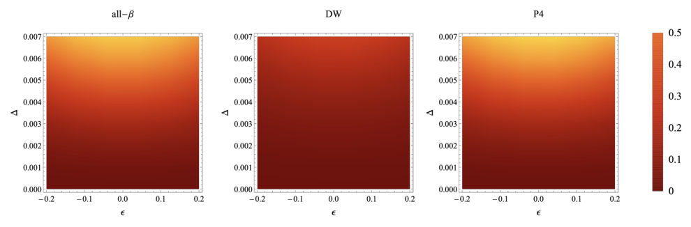
<figcaption class="paper-figure-caption"><b>Fig 5.</b> FIG. 5: Finite-time Krylov response in the (ϵ, ∆) plane at t⋆= 10, with V = −4τ + ϵ and τ = 1. The three panels show K(t⋆; ϵ, ∆) for the all-β-filled state, the doublon domain-wall state, and the P4 doublon pattern, respectively, using a common color scale. The CDW state is not shown because it is an exact frozen state for all (ϵ, ∆), with KCDW(t) = 0. The maps display the expected hierarchy of dynamical vulnerability: the P4 and all-β states show the strongest response, while the domain wall remains much less susceptible to the ∆-quench.</figcaption>
</figure>
</div>

<p><strong>Summary.</strong> The paper uses Krylov Complexity as a quantitative measure to probe the stability of Carrollian symmetries in flat band fermionic models. By analyzing quenches across different phases, it demonstrates that this complexity growth reveals how robustly protected these exotic symmetries are against external perturbations. This provides deep insight into non-equilibrium dynamics in strongly correlated materials.</p>
<p><strong>Why it may be interesting.</strong> This work directly addresses non-equilibrium dynamics and spectral properties in strongly correlated electron systems (flat band physics) using advanced quantum diagnostics like Krylov complexity.</p>
<details>
<summary>Detailed structure</summary>
<p><strong>Main problem.</strong> The study investigates how state dynamics in flat band systems, characterized by emergent Carrollian symmetries, evolve when subjected to perturbations that break these symmetries.</p>
<p><strong>Main result.</strong> Krylov complexity proves to be a powerful diagnostic tool, quantitatively measuring the resilience and destruction of Carroll symmetry across different initial phases (Vanilla vs. Exotic).</p>
<p><strong>Method.</strong> The analysis employs Krylov Complexity ($C_K(t)$) by projecting time evolution onto a dynamically generated orthonormal basis derived from the Hamiltonian.</p>
<p><strong>Model / system.</strong> The primary model is an interacting fermionic ladder Hamiltonian exhibiting flat bands, which are augmented by Carroll-breaking perturbations. A continuum scalar field theory with gradient deformation is also analyzed.</p>
<p><strong>Key observables.</strong> Krylov Complexity ($C_K(t)$), Krylov Inverse Participation Ratio (KIPR), real-space spreading widths of excitons, and the initial growth rate coefficient $b_2^1$.</p>
<p><strong>Important parameters / regimes.</strong> The coupling strength ($\lambda$), lattice parameters ($   au$, $V$), and the quench protocol defining the initial state (Vanilla vs. Exotic phase).</p>
<p><strong>Assumptions / limitations.</strong> The analysis often relies on short-time approximations for complexity growth, and in continuum limits, it assumes a double-scaling prescription to handle UV/IR mixing.</p>
<p><strong>Figures summary.</strong> Figures illustrate phase diagrams defining different quantum phases (Vanilla/Exotic) and show the time evolution of Krylov complexity or real-space spreading profiles under perturbations.</p>
<p><strong>Paper structure.</strong> The paper progresses by first establishing the theoretical framework using flat bands and Carroll symmetry, then applying Krylov complexity to analyze quenches across critical lines in lattice models, and finally extending the diagnostic tool to continuum field theories exhibiting UV/IR mixing.</p>
</details>
<details>
<summary>Abstract</summary>
<p>Systems with flat band structures, when written in the language of Compact Localised States (CLS), have been shown to be explicitly invariant under supertranslation symmetries, making Carrollian symmetries inherently important for such systems. In this work, we explore the state dynamics of these systems, focusing on quenches induced by Carroll breaking perturbations, through the probe of Krylov (spread) Complexity. We specialise to Fermionic ladder Hamiltonians with all bands flat (ABF) scenario, augmented by a supertranslation preserving interaction, and discuss Krylov state complexity for quenches across critical lines. We further discuss how the growth of Krylov complexity sharply resolves the phase-dependent resilience of Carrollian sectors against delocalising perturbations. This is augmented by a complementary mechanism for Krylov growth in a continuum Carroll scalar field theory with a gradient deformation, which exhibits strong ultraviolet sensitivity (UV/IR mixing).</p>
</details>
<p><sub><a href="#top">↑ back to top</a></sub></p>

<p><a id="paper-2606.06452"></a></p>
<h3 id="energy-modulated-time-asymmetric-spontaneous-collapse-forward-backward-dynamics-from-stochastic-ito-reversal-and-bright-solitons"><a href="http://arxiv.org/abs/2606.06452v1">Energy-Modulated Time-Asymmetric Spontaneous Collapse: Forward-Backward Dynamics from Stochastic Ito Reversal and Bright Solitons</a></h3>
<p><strong>Authors:</strong> Ikechukwu C. Okoro, Mike O. Osiele, Godfrey E. Akpojotor<br>
<strong>Type:</strong> theory · <strong>Category:</strong> quantum gases · <strong>PDF:</strong> <a href="https://arxiv.org/pdf/2606.06452v1">https://arxiv.org/pdf/2606.06452v1</a><br>
<strong>Analysis basis:</strong> full PDF text, analyzed in chunks
<strong>Topic relevance:</strong> 🔥 <code>measurement-induced transitions</code> <strong>4/5</strong> · <code>correlated / nonlocal dissipation</code> <strong>3/5</strong> · <code>driven-dissipative phase transition</code> <strong>3/5</strong> · <code>methods for driven-dissipative</code> <strong>3/5</strong> · <code>quantum measurements</code> <strong>3/5</strong> · <code>analog quantum simulation</code> <strong>2/5</strong> · <code>non-equilibrium dynamics</code> <strong>2/5</strong> · <code>non-equilibrium universality</code> <strong>2/5</strong> · <code>Keldysh / 2PI / non-Gaussian methods</code> <strong>1/5</strong> · <code>Kondo &amp; dissipative impurity</code> <strong>1/5</strong> · <code>entanglement &amp; information structure</code> <strong>1/5</strong></p>
<div class="figure-strip-hint">↔ Scroll figures horizontally</div>
<div class="paper-figures-scroll">
<figure class="paper-figure-card">
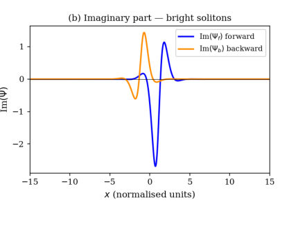
<figcaption class="paper-figure-caption"><b>Fig 1.</b> Figure 1. Forward (solid blue) and backward (solid orange) bright soliton profiles. Panel (a): real parts Re(Ψ); panel (b): imaginary parts Im(Ψ). Parameters: ω = 1.2, k = 1.8, t = 2.0.</figcaption>
</figure>
<figure class="paper-figure-card">

<figcaption class="paper-figure-caption"><b>Fig 2.</b> Figure 2 presents the analytic collapse coupling strengths γf = 0.125ω (forward) and γb = 0.625ω (backward) as functions of ω, together with the collapse strength asymmetry parameter γap.</figcaption>
</figure>
<figure class="paper-figure-card">

<figcaption class="paper-figure-caption"><b>Fig 3.</b> Figure 2. Forward collapse coupling γf = 0.125ω (solid blue), backward collapse coupling γb = 0.625ω (dashed red), and constant asymmetry parameter γap = 2/3 ≈0.667 (dash- dot black) as functions of ω. Note γb = 5γf at every frequency.</figcaption>
</figure>
<figure class="paper-figure-card">
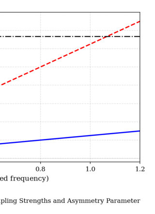
<figcaption class="paper-figure-caption"><b>Fig 4.</b> Figure 3 displays the complete (k, ω) parameter space landscape of both collapse operators simultaneously as a heat map with contour overlay, while Figure 4 shows their temporal evolution. The heat map reveals the full two dimensional structure of the collapse dynamics in a way that one dimensional slices cannot: the soliton boundary ω = k2/2 appears as a sharp transition from the hatched non-soliton re- gion (upper left) to the active collapse region (lower right), and the colour gradient immediately shows that Γf (panel a) attains higher values across the entire soliton-</figcaption>
</figure>
<figure class="paper-figure-card">
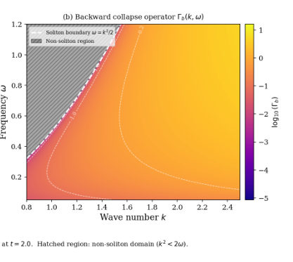
<figcaption class="paper-figure-caption"><b>Fig 5.</b> Figure 3. Heat map and contour plot of the forward collapse operator Γf(k, ω) (panel a) and backward collapse operator Γb(k, ω) (panel b) in the (k, ω) parameter plane at t = 2.0. Colour encodes log10(Γ) on a shared scale; white contour lines label equal-value levels. The dashed white line is the soliton boundary ω = k2/2; the hatched region (k2 &lt; 2ω) is the non-soliton domain where no bright soliton solutions exist. Both panels share the same colour scale, making the forward–backward asymmetry directly visible: Γf reaches higher values (brighter yellow) than Γb across the entire soliton-allowed region.</figcaption>
</figure>
</div>

<p><strong>Summary.</strong> The paper proposes an energy-modulated, time-asymmetric spontaneous collapse model for BECs by analyzing stochastic Ito reversal on the CQ-NLSE. It demonstrates that forward and backward dynamics yield fundamentally different nonlinear terms ($\gamma_b = 5\gamma_f$), confirming a structural quantum irreversibility quantified by a universal asymmetry parameter of $2/3$.</p>
<p><strong>Why it may be interesting.</strong> This work directly tackles measurement problem phenomenology within a quantum gas context (BEC), providing quantitative predictions for irreversible collapse mechanisms distinct from standard symmetric models.</p>
<details>
<summary>Detailed structure</summary>
<p><strong>Main problem.</strong> The paper addresses the fundamental problem of quantum irreversibility by developing a time-asymmetric spontaneous collapse framework derived from stochastic Ito field reversal.</p>
<p><strong>Main result.</strong> It establishes that the forward and backward dynamics exhibit strong asymmetry, quantified by $\gamma_b = 5\gamma_f$ and a universal asymmetry parameter of $2/3$.</p>
<p><strong>Method.</strong> The authors derive nonlinear stochastic differential equations (SDEs) using Ito calculus applied to the Cubic-Quintic Nonlinear Schrödinger Equation (CQ-NLSE) formalism.</p>
<p><strong>Model / system.</strong> The model is applied to a quasi-one dimensional Bose-Einstein condensate (BEC) of attractive $^7	ext{Li}$ atoms, utilizing the CQ-NLSE as its mean-field description.</p>
<p><strong>Key observables.</strong> Forward and backward soliton amplitudes ratio ($A_f/A_b \approx 1.870$), collapse operator growth ($\Gamma_f$ grows while $\Gamma_b$ decays), and the asymmetry parameter $\gamma_{ap} = 2/3$.</p>
<p><strong>Important parameters / regimes.</strong> Noise strength ($\eta$), local probability density ($|\Psi|^2$), excitation energy squared ($(\hbar\omega)^2$), and the universal asymmetry-coupling parameter (2/3).</p>
<p><strong>Assumptions / limitations.</strong> The analysis relies on the mean-field approximation, weak noise limits ($\eta \ll 1$), and an energy eigenvalue approximation for deriving the collapse operator $\Gamma$.</p>
<p><strong>Figures summary.</strong> Figures illustrate spatial profiles of forward/backward solitons (amplitude ratio), plot the distinct quintic coupling parameters ($\gamma_b = 5\gamma_f$), and show heat maps confirming temporal growth asymmetry in the collapse operator.</p>
<p><strong>Paper structure.</strong> The paper builds from deriving stochastic SDEs via Ito reversal, establishing the energy-driven collapse operator $\Gamma$, reducing to the CQ-NLSE mean-field limit, and finally analyzing the resulting time-asymmetric dynamics using soliton solutions and heat map diagnostics.</p>
</details>
<details>
<summary>Abstract</summary>
<p>We present a rigorous theoretical framework for symmetry breaking and quantum irreversibility arising from stochastic Ito field reversal within a cubic-quintic nonlinear Schrodinger equation (CQ-NLSE) formalism. Starting from three physically motivated considerations, forward and backward nonlinear stochastic differential equations are derived via the Ito calculus. Kinematic time-reversal is shown to be fundamentally incompatible with the Ito stochastic structure, yielding the universal asymmetry-coupling parameter of 2/3. An energy-driven collapse operator proportional to the product of noise strength, local probability density, and excitation energy squared is introduced, amplifying the collapse in high-density, high-excitation regions. Exactly bright soliton solutions are obtained for a quasi-one-dimensional BEC of attractive Li-7 atoms, with forward and backward amplitude ratio of 1.870. Heat map analysis of the parameter planes reveals that the forward collapse operator grows monotonically in time while the backward counterpart decays, achieving a ratio approximately 1030, sharply distinguishing this framework from conventional symmetric collapse models.</p>
</details>
<p><sub><a href="#top">↑ back to top</a></sub></p>

<p><a id="paper-2606.05904"></a></p>
<h3 id="non-equilibrium-quantum-thermodynamics-of-a-memory-bearing-open-system-process"><a href="http://arxiv.org/abs/2606.05904v1">Non-equilibrium quantum thermodynamics of a memory-bearing open-system process</a></h3>
<p><strong>Authors:</strong> Biagio G. Banigi, Eric Lutz, Mauro Paternostro<br>
<strong>Type:</strong> theory · <strong>Category:</strong> statistical mechanics · <strong>PDF:</strong> <a href="https://arxiv.org/pdf/2606.05904v1">https://arxiv.org/pdf/2606.05904v1</a><br>
<strong>Analysis basis:</strong> full PDF text, analyzed in chunks
<strong>Topic relevance:</strong> 🔥 <code>methods for driven-dissipative</code> <strong>4/5</strong> · 🔥 <code>non-equilibrium dynamics</code> <strong>4/5</strong> · <code>Keldysh / 2PI / non-Gaussian methods</code> <strong>3/5</strong> · <code>correlated / nonlocal dissipation</code> <strong>3/5</strong> · <code>driven-dissipative phase transition</code> <strong>3/5</strong> · <code>entanglement &amp; information structure</code> <strong>2/5</strong> · <code>non-equilibrium universality</code> <strong>2/5</strong> · <code>Tavis-Cummings &amp; cavity-many-emitter</code> <strong>1/5</strong> · <code>measurement-induced transitions</code> <strong>1/5</strong> · <code>quantum measurements</code> <strong>1/5</strong></p>
<div class="figure-strip-hint">↔ Scroll figures horizontally</div>
<div class="paper-figures-scroll">
<figure class="paper-figure-card">
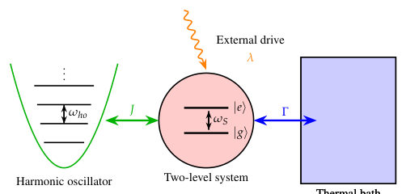
<figcaption class="paper-figure-caption"><b>Fig 1.</b> FIG. 1. Sketch of the open system process described in Sec. II. A two-level system is coupled to a harmonic oscillator (with strength J) and a thermal bath (Γ), and it is driven by an external field (described by the parameter λ).</figcaption>
</figure>
<figure class="paper-figure-card">
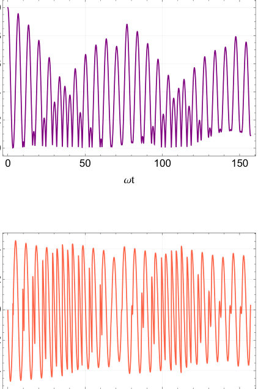
<figcaption class="paper-figure-caption"><b>Fig 2.</b> FIG. 2. Time evolution of the (a) trace distance D(ρ1, ρ2) and (b) the trace distance rate of change σ(t, ρ1,2(0)) as defined, respectively, in (7) and (10). The simulations make use of states ρ1(0) = |+⟩⟨+| and ρ2(0) = |−⟩⟨−| and physical parameters ω = 1, J = 0.2, p = 5, Γ = 10−3, n = 3, ωD = 1/3, λ = 3 × 10−3, ωt f = 50π. All parameters are expressed in dimensionless units by fixing the system frequency ω as the reference scale.</figcaption>
</figure>
<figure class="paper-figure-card">
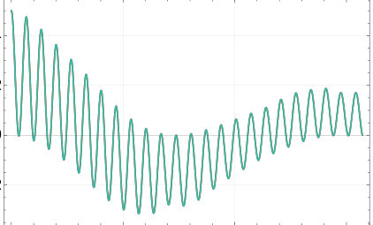
<figcaption class="paper-figure-caption"><b>Fig 3.</b> FIG. 3. Temporal behavior of the (a) populations and (b) coherences of the system’s density matrix plotted against the dimensionless time ωt. We only report the real part of coherences (Re[ρeg] = Re[ρge]), since the imaginary one is quantitatively negligible. In all the simula- tions, if not otherwise specified, we used the same parameters as in Fig. 2.</figcaption>
</figure>
<figure class="paper-figure-card">
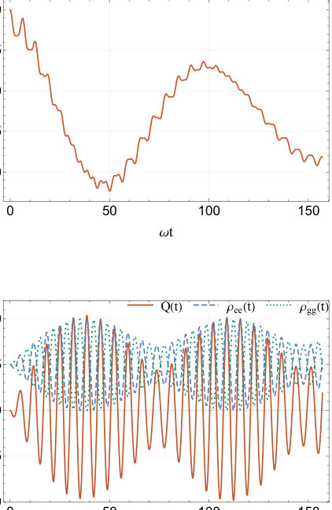
<figcaption class="paper-figure-caption"><b>Fig 4.</b> FIG. 4. Panel (a): Temporal behavior of work done on the system, plotted against the dimensionless time ωt. Panel (b): We show the dynamics of the heat Q(t) exchanged between the qubit and the environment for the same situation displayed in panel (a), along with the system populations for comparison. In all the simulations, if not otherwise specified, we used the same parameters as in Fig. 2.</figcaption>
</figure>
<figure class="paper-figure-card">
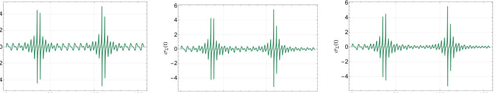
<figcaption class="paper-figure-caption"><b>Fig 5.</b> FIG. 5. Time evolution of the entropy production rate σΣ(t) for three different dynamical configurations. In panel (a) we set Γ = λ = 0; in panel (b) Γ = 10−3, λ = 0; and in panel (c) Γ = 10−3, λ = 3 × 10−3. In all cases, ω = 1, J = 0.2, p = 5, n = 3, ωD = 1/3, ωt f = 50π. All parameters are expressed in dimensionless units by fixing the system frequency ω as the reference scale.</figcaption>
</figure>
</div>

<p><strong>Summary.</strong> The paper analyzes non-equilibrium thermodynamics for a qubit coupled to a structured environment. It demonstrates that memory effects, stemming from the finite nature of the bath (harmonic oscillator), cause deviations from Markovian predictions. These deviations are quantified by analyzing the time evolution and potential sign changes in the entropy production rate.</p>
<p><strong>Why it may be interesting.</strong> This work is highly relevant as it tackles the fundamental limitations of standard Markovian descriptions in open quantum systems, providing quantitative tools ($\sigma\Sigma(t)$) to detect and characterize non-Markovian energy flow.</p>
<details>
<summary>Detailed structure</summary>
<p><strong>Main problem.</strong> The study investigates non-equilibrium quantum thermodynamics for open systems, specifically analyzing how memory effects influence work, heat, and entropy production beyond the standard Markovian approximation.</p>
<p><strong>Main result.</strong> Non-Markovian dynamics, evidenced by backflow of information (e.g., negative entropy production rate $\sigma\Sigma(t)$), significantly shape the system's thermodynamic response compared to Markovian limits.</p>
<p><strong>Method.</strong> The analysis employs quantum master equations and diagnostic tools like the BLP measure and the time evolution of entropy production ($\sigma\Sigma(t)$) to quantify non-Markovianity.</p>
<p><strong>Model / system.</strong> The model is a two-level system (qubit) coupled to a composite environment consisting of a harmonic oscillator and a thermal bath, driven by an external field. The dynamics are governed by a Lindblad-like master equation.</p>
<p><strong>Key observables.</strong> Work rate ($\dot{W}$), heat rate ($\dot{Q}$), entropy production rate ($\sigma\Sigma(t)$), and the trace distance $D(t)$.</p>
<p><strong>Important parameters / regimes.</strong> Coupling strengths ($J$, $\Gamma$), driving frequency ($\omega_D$), and the regime comparison between Markovian ($J=0$) and non-Markovian ($J>0$) dynamics.</p>
<p><strong>Assumptions / limitations.</strong> The weak-coupling regime is assumed, and the analysis often relies on deriving effective equations of motion by tracing out environmental degrees of freedom.</p>
<p><strong>Figures summary.</strong> Figures illustrate time evolution plots showing population decay, coherence damping, and crucially, the non-monotonic or negative behavior of $\sigma\Sigma(t)$ when memory effects are present.</p>
<p><strong>Paper structure.</strong> The paper develops the theoretical framework by defining thermodynamic rates (Work/Heat) and then analyzes the dynamics using both quantum information measures (BLP distance) and thermodynamic diagnostics ($\sigma\Sigma(t)$), comparing results across different coupling strengths to isolate the role of memory.</p>
</details>
<details>
<summary>Abstract</summary>
<p>We show the emergence of memory effects in the dynamics of a driven two-level system interacting with a composite environment, and analyze their influence on work, heat and entropy production. We further investigate how the interplay between driving, dissipation and memory effects, stemming from the finiteness of the environment, shapes the thermodynamic response of the system, thus providing insight into quantum thermodynamics beyond the Markovian approximation.</p>
</details>
<p><sub><a href="#top">↑ back to top</a></sub></p>

<p><a id="paper-2606.05928"></a></p>
<h3 id="broadband-ac-magnetic-field-sensing-via-continuous-wave-optically-detected-magnetic-resonance-with-nv-centers-in-diamond"><a href="http://arxiv.org/abs/2606.05928v1">Broadband AC Magnetic Field Sensing via Continuous wave optically detected magnetic resonance with NV Centers in diamond</a></h3>
<p><strong>Authors:</strong> Ryohei Dokai, Ryusei Okaniwa, Miku Ishizaki, Junko Ishi-Hayase, Yuichiro Matsuzaki<br>
<strong>Type:</strong> theory · <strong>Category:</strong> other · <strong>PDF:</strong> <a href="https://arxiv.org/pdf/2606.05928v1">https://arxiv.org/pdf/2606.05928v1</a><br>
<strong>Analysis basis:</strong> full PDF text, analyzed in chunks
<strong>Topic relevance:</strong> 🔥 <code>methods for driven-dissipative</code> <strong>4/5</strong> · <code>exotic spin models in light-matter</code> <strong>3/5</strong> · <code>spintronics-quantum-optics interface</code> <strong>3/5</strong> · <code>QC/QI experiment</code> <strong>2/5</strong> · <code>driven-dissipative phase transition</code> <strong>2/5</strong> · <code>Keldysh / 2PI / non-Gaussian methods</code> <strong>1/5</strong> · <code>analog quantum simulation</code> <strong>1/5</strong> · <code>correlated / nonlocal dissipation</code> <strong>1/5</strong> · <code>measurement-induced transitions</code> <strong>1/5</strong> · <code>non-equilibrium dynamics</code> <strong>1/5</strong> · <code>non-equilibrium universality</code> <strong>1/5</strong> · <code>quantum measurements</code> <strong>1/5</strong></p>
<div class="figure-strip-hint">↔ Scroll figures horizontally</div>
<div class="paper-figures-scroll">
<figure class="paper-figure-card">
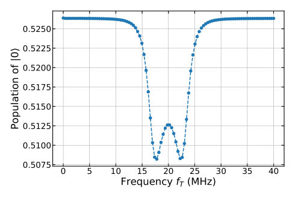
<figcaption class="paper-figure-caption"><b>Fig 1.</b> FIG. 1: Plot of the variation of the |0⟩ground-state occupation as a function of target frequency fT ≡ωT /2π. The parameters are D/2π = 2870 MHz, E/2π = 10 MHz, ωD/2π = 2860 MHz, λD/2π = 6.0 MHz, λT /2π = 1.0 MHz, Γ/2π = 2.0 MHz, and t = 5 µs.</figcaption>
</figure>
<figure class="paper-figure-card">

<figcaption class="paper-figure-caption"><b>Fig 2.</b> Figure 1 shows the result of the simulation performed with the above parameters. From the figure, the occupa- tion probability drops at specific positions of the target frequency fT . Substituting the present simulation pa- rameters (2E/2π = 20 MHz, λD/4π = 3 MHz) into the resonance condition ωT = |2E ± λD/2| derived in Chap- ter IV, the predicted resonance frequencies are</figcaption>
</figure>
<figure class="paper-figure-card">
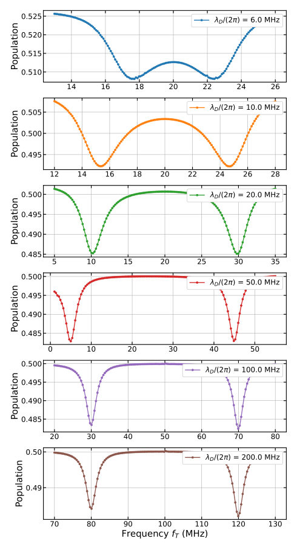
<figcaption class="paper-figure-caption"><b>Fig 3.</b> FIG. 2: Plots of the variation of the |0⟩ground-state occupation as a function of target frequency fT when the control-microwave strength λD/2π is varied from 6.0 MHz to 200.0 MHz. The other parameters are D/2π = 2870 MHz, E/2π = 10 MHz, ωD/2π = 2860 MHz, λT /2π = 1.0 MHz, Γ/2π = 2.0 MHz, and t = 5 µs.</figcaption>
</figure>
<figure class="paper-figure-card">
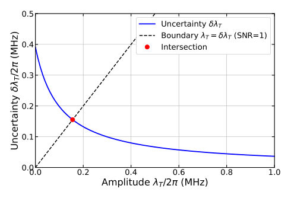
<figcaption class="paper-figure-caption"><b>Fig 4.</b> FIG. 4: Plot of the estimation error as a function of target-field amplitude (solid line). For reference, δλT = λT is also plotted (dashed line). The parameters are D/2π = 2870 MHz, E/2π = 10 MHz, λD/2π = 6.0 MHz, Γ/2π = 2.0 MHz, t = 5 µs, Nm = T/t, and T = 1 s.</figcaption>
</figure>
<figure class="paper-figure-card">
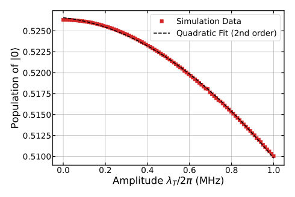
<figcaption class="paper-figure-caption"><b>Fig 5.</b> FIG. 3: Plot of the dependence of the signal intensity on the target-field amplitude λT /2π. The parameters are D/2π = 2870 MHz, E/2π = 10 MHz, λD/2π = 6.0 MHz, Γ/2π = 2.0 MHz, t = 5 µs, Nm = T/t, and T = 1 s.</figcaption>
</figure>
</div>

<p><strong>Summary.</strong> The authors propose a novel broadband AC magnetometry scheme utilizing NV centers in diamond and Continuous Wave Optically Detected Magnetic Resonance (CW-ODMR). By employing microwave-driven dressed states, they theoretically and numerically demonstrate the ability to detect magnetic fields up to 100 MHz. This overcomes the severe bandwidth restrictions of conventional CW-ODMR methods.</p>
<p><strong>Why it may be interesting.</strong> This work directly addresses open quantum systems dynamics in a solid-state platform (NV centers) by engineering the system Hamiltonian via microwave driving to overcome inherent physical bandwidth limitations, which is highly relevant for quantum sensing applications.</p>
<details>
<summary>Detailed structure</summary>
<p><strong>Main problem.</strong> Conventional CW-ODMR AC magnetic field sensing suffers from a severely limited detection bandwidth, typically restricted to only a few MHz.</p>
<p><strong>Main result.</strong> The proposed scheme using microwave-driven dressed states enables the detection of AC magnetic fields up to the order of 100 MHz, significantly expanding the operational range.</p>
<p><strong>Method.</strong> Theoretical analysis and numerical simulations were used to model the system dynamics governed by a Lindblad master equation under microwave driving.</p>
<p><strong>Model / system.</strong> The physical system is the Nitrogen-Vacancy (NV) center in diamond. The dynamics are modeled using a Hamiltonian ($\hat{H}$) and solved via the Lindblad master equation, incorporating optical pumping transitions.</p>
<p><strong>Key observables.</strong> Fluorescence intensity drop (dip) measured as the time-averaged occupation probability of the $|0
angle$ state ($P_0$).</p>
<p><strong>Important parameters / regimes.</strong> The achievable bandwidth is determined by tuning the Rabi frequency ($\lambda_D$), which can reach $\sim 100$ MHz.</p>
<p><strong>Assumptions / limitations.</strong> Approximations include assuming ideal projective measurement initially, and later accounting for measurement noise; the Rotating-Wave Approximation (RWA) is used but verified up to high frequencies.</p>
<p><strong>Figures summary.</strong> Figures demonstrate dips in $P_0$ at predicted resonance frequencies, show that increasing the control field strength ($\lambda_D$) broadens the dip spacing toward 100 MHz, and quantify the achievable sensitivity ($30 \mu	ext{T}/\sqrt{	ext{Hz}}$).</p>
<p><strong>Paper structure.</strong> The paper progresses from identifying the bandwidth limitation of conventional CW-ODMR to proposing a microwave-driven dressed state scheme. It details the theoretical Hamiltonian and master equation, derives the resonance condition ($\omega_T = \sqrt{2E \pm \lambda_D^2}$), and validates the broadband capability through numerical simulations.</p>
</details>
<details>
<summary>Abstract</summary>
<p>The nitrogen-vacancy (NV) center in diamond has attracted considerable attention as a highly sensitive quantum sensor that can operate at room temperature. In particular, continuous-wave optically detected magnetic resonance (CW-ODMR) is promising for a wide range of applications because of its simplicity. However, conventional AC magnetic-field sensing schemes based on CW-ODMR suffer from a limited detection bandwidth: the detectable frequency is either fixed by intrinsic physical parameters of the NV center or, even when tunable, restricted to a narrow range of only a few MHz. Here, we propose a broadband AC magnetometry scheme based on CW-ODMR with NV centers using microwave-driven dressed states.Through theoretical analysis and numerical simulations, we show that the proposed scheme enables the detection of AC magnetic fields with frequencies up to the order of 100 MHz, which has been difficult to achieve using conventional CW-ODMR-based methods.</p>
</details>
<p><sub><a href="#top">↑ back to top</a></sub></p>

<p><a id="paper-2606.05288"></a></p>
<h3 id="emergent-self-similar-quantum-revivals-in-spiral-drives"><a href="http://arxiv.org/abs/2606.05288v1">Emergent Self-Similar Quantum Revivals in Spiral Drives</a></h3>
<p><strong>Authors:</strong> Xin-Chi Zhou, Liang-Hong Mo, Hongzheng Zhao, Bastien Lapierre<br>
<strong>Type:</strong> theory · <strong>Category:</strong> statistical mechanics · <strong>PDF:</strong> <a href="https://arxiv.org/pdf/2606.05288v1">https://arxiv.org/pdf/2606.05288v1</a><br>
<strong>Analysis basis:</strong> full PDF text, analyzed in chunks
<strong>Topic relevance:</strong> 🔥 <code>entanglement &amp; information structure</code> <strong>4/5</strong> · 🔥 <code>non-equilibrium dynamics</code> <strong>4/5</strong> · <code>analog quantum simulation</code> <strong>3/5</strong> · <code>methods for driven-dissipative</code> <strong>3/5</strong> · <code>non-equilibrium universality</code> <strong>3/5</strong> · <code>scars &amp; prethermalization</code> <strong>2/5</strong> · <code>Keldysh / 2PI / non-Gaussian methods</code> <strong>1/5</strong> · <code>driven-dissipative phase transition</code> <strong>1/5</strong></p>
<div class="figure-strip-hint">↔ Scroll figures horizontally</div>
<div class="paper-figures-scroll">
<figure class="paper-figure-card">

<figcaption class="paper-figure-caption"><b>Fig 1.</b> Figure 1. (a) Circuit representation of the spiral drive introduced in Eq. (1). Different colors for the X gates indicate different irrational single-qubit rotations, following θn = nπφ (mod 2π). These successive rotations form a characteristic Fermat’s spiral. (b) Time evolution of the fidelity F(n) and half-system entanglement entropy SL/2(n) as a function of the stroboscopic step n, for L = 1000, and ϕz = π/3. The fidelity reveals near revivals at special times, highlighted in orange, corresponding to n = F3m. Similar features can be observed in SL/2(n), which grows logarithmically with n before eventually saturating to low-entanglement states. A magnified view of SL/2(n′) starting at n′...</figcaption>
</figure>
<figure class="paper-figure-card">

<figcaption class="paper-figure-caption"><b>Fig 2.</b> Figure 3. Parametrically long-lived non-heating dynamics under ran- dom integrability-breaking. (a) The bipartite entanglement entropy SL/2(n) at Fibonacci times n = Fm (filled circles) and at loga- rithmically spaced intermediate times (light dots) for different noise strengths θz. A prethermal regime emerges, in which the non-heating dynamics persists, as evidenced by revivals toward states close to the initial state. Shaded bands indicate ± one standard deviation over 10 random realizations, and the dashed line marks the Page value. (b) Prethermal lifetime τ versus θz. Here τ is defined as the time at which SL/2(n) exceeds the threshold Sc L/2 = 8. The fitted scaling τ ∼θ−2 z (dashed...</figcaption>
</figure>
<figure class="paper-figure-card">

<figcaption class="paper-figure-caption"><b>Fig 3.</b> Figure 2. (a) The bipartite entanglement entropy SL/2(n) for the spiral drive compared with three reference protocols: the random drive with θn sampled uniformly in [0, 2π) (shaded region: one standard deviation over realizations), the Floquet drive with fixed θn ≡θ, and the Fibonacci drive in which ZZ and X gates alternate according to the Fibonacci substitution rule. The spiral drive exhibits highly reduced entanglement growth compared to any of the other protocols. The system size is L = 400, with h = 0 and ϕz = π/3. (b) SL/2(n) for the spiral drive at n = Fm for different transverse fields h in (7). As h increases, the intermediate entanglement growth goes from logarithmic to linear,...</figcaption>
</figure>
<figure class="paper-figure-card">

<figcaption class="paper-figure-caption"><b>Fig 4.</b> Figure 4. Plot of Tr(MFn), as defined in (4), shown as a function of the index n for Haar distributed SU(2) matrices P, with 2000 random samples. The averaged value of the trace is shown in blue, and each realization of P is shown as a gray curve. We numerically observe the convergence to the period-6 pattern for all realizations of P.</figcaption>
</figure>
<figure class="paper-figure-card">

<figcaption class="paper-figure-caption"><b>Fig 5.</b> Figure 5. Deviation of the structure factor from its initial value ex- hibits self-similar revivals. |∆Sxx(k = π/3, n)| = |Sxx(k = π/3, n) −Sxx(k = π/3, 0)|. The locations of the deep dips are essentially independent of L, indicating that the revivals are intrinsic to the quasiperiodic spiral drive.</figcaption>
</figure>
</div>

<p><strong>Summary.</strong> The paper introduces the concept of self-similar quantum revivals as a novel form of temporal order in non-equilibrium quantum matter. By analyzing systems driven by quasiperiodic spiral kicks, the authors prove that both fidelity and entanglement entropy exhibit hierarchical recurrence patterns. This work establishes a new theoretical framework for understanding memory retention and dynamics far from equilibrium.</p>
<p><strong>Why it may be interesting.</strong> This work provides concrete theoretical predictions about emergent temporal order in driven many-body systems, offering testable signatures (self-similar revivals) that can be sought in current quantum simulators using superconducting qubits or trapped ions.</p>
<details>
<summary>Detailed structure</summary>
<p><strong>Main problem.</strong> To investigate whether self-similarity can emerge as a fundamental organizing principle of far-from-equilibrium quantum matter in the time domain.</p>
<p><strong>Main result.</strong> The authors uncovered a distinct form of nonequilibrium temporal order: self-similar quantum revivals, which are robustly observed in both fidelity and entanglement entropy for systems driven by quasiperiodic spiral kicks.</p>
<p><strong>Method.</strong> The analysis combines analytical proofs using quasiperiodic cocycles over SU(2) with numerical simulations tracking state fidelity and bipartite entanglement entropy across different driving parameters.</p>
<p><strong>Model / system.</strong> The model is a many-body system (Ising chain) subjected to time evolution governed by quasiperiodic spiral kicks, which are constructed from an arbitrary non-diagonal SU(2) matrix combined with $\sigma_z$ gates. The dynamics are analyzed in momentum space.</p>
<p><strong>Key observables.</strong> State fidelity $F(n)$, half-chain bipartite Entanglement Entropy $S_{L/2}(n)$, and the convergence of the product of transfer matrices to a period-6 cycle.</p>
<p><strong>Important parameters / regimes.</strong> The quasiperiodic driving angle $\varphi$ (related to the golden ratio), perturbation strength ($ heta_z$), and entanglement thresholds ($S$).</p>
<p><strong>Assumptions / limitations.</strong> The mathematical derivations often rely on assuming that the underlying quasiperiodic cocycle is reducible, which simplifies the analysis significantly.</p>
<p><strong>Figures summary.</strong> Figures show the revival structure in $F(n)$ and $S_{L/2}(n)$ at specific times ($n=F^{3m}$), the convergence of momentum mode trajectories to an attractor, and the scaling of prethermal lifetime $ au$ with perturbation strength.</p>
<p><strong>Paper structure.</strong> The paper progresses from establishing the general concept of self-similar revivals in integrable settings, providing analytical justifications via cocycles, characterizing entanglement growth regimes (area/volume law), and finally demonstrating robustness against generic integrability-breaking perturbations to establish a new paradigm for non-equilibrium quantum matter.</p>
</details>
<details>
<summary>Abstract</summary>
<p>We uncover a distinct form of nonequilibrium temporal order: self-similar quantum revivals in a many-body system driven by quasiperiodic spiral kicks, where the system recurrently returns close to its initial state at a hierarchically nested sequence of times. We demonstrate that both the fidelity and entanglement entropy exhibit this self-similar temporal structure. It originates from an emergent dynamical attractor, which we identify, such that all momentum modes eventually fall into the same closed orbits at self-similar times. We analytically justify this behavior and show that, for special momentum modes, this attractor arises as a consequence of a generalized spin echo process, and more generally we prove its existence using quasiperiodic SU(2) cocycles. Interestingly, the dynamics between consecutive revivals supports either volume- or area-law entanglement scaling, tunable via the driving parameters. In the presence of integrability-breaking perturbations, the system eventually heats up, but a long-lived prethermal regime with algebraically tunable lifetime occurs before heating sets in. Our results establish self-similar quantum revivals as a new paradigm for nonequilibrium quantum matter and provide a realistic route for its observation in current quantum simulators.</p>
</details>
<p><sub><a href="#top">↑ back to top</a></sub></p>

<p><a id="paper-2606.06466"></a></p>
<h3 id="enhancement-of-charge-correlations-and-real-space-topological-marker-on-an-interacting-non-hermitian-su-schrieffer-heeger-model"><a href="http://arxiv.org/abs/2606.06466v1">Enhancement of charge correlations and real-space topological marker on an interacting non-Hermitian Su-Schrieffer-Heeger model</a></h3>
<p><strong>Authors:</strong> Sebastião dos A. Sousa-Júnior, Pedro B. Melo, Rubem Mondaini, Arnob Kumar Ghosh, Rodrigo Arouca<br>
<strong>Type:</strong> theory · <strong>Category:</strong> strongly correlated electrons · <strong>PDF:</strong> <a href="https://arxiv.org/pdf/2606.06466v1">https://arxiv.org/pdf/2606.06466v1</a><br>
<strong>Analysis basis:</strong> full PDF text, analyzed in chunks
<strong>Topic relevance:</strong> 🔥 <code>analog quantum simulation</code> <strong>4/5</strong> · <code>driven-dissipative phase transition</code> <strong>3/5</strong> · <code>methods for driven-dissipative</code> <strong>3/5</strong> · <code>correlated / nonlocal dissipation</code> <strong>2/5</strong> · <code>non-equilibrium dynamics</code> <strong>2/5</strong> · <code>non-equilibrium universality</code> <strong>2/5</strong> · <code>Frenkel-Kontorova</code> <strong>1/5</strong> · <code>Keldysh / 2PI / non-Gaussian methods</code> <strong>1/5</strong> · <code>Kondo &amp; dissipative impurity</code> <strong>1/5</strong> · <code>entanglement &amp; information structure</code> <strong>1/5</strong></p>
<div class="figure-strip-hint">↔ Scroll figures horizontally</div>
<div class="paper-figures-scroll">
<figure class="paper-figure-card">

<figcaption class="paper-figure-caption"><b>Fig 1.</b> FIG. 1. (a) Schematic representation of the hoppings in the non-Hermitian dimerized SSH model, see Eq. (1). Phase di- agram of the system for periodic, (b) [open, (c)], boundary conditions. Topo-I and Topo-II stand for the topological Her- mitian and non-Hermitian phases, respectively, with unity or half-unity winding number, and the trivial insulator phase with zero winding number. Phase boundaries are determined by finite-size scaling of charge correlations, many-body energy gaps, and the topological marker. Data are shown for t2 = 1, δ = 0.6, computed from left and right eigenvectors.</figcaption>
</figure>
<figure class="paper-figure-card">

<figcaption class="paper-figure-caption"><b>Fig 2.</b> FIG. 2. Results in the V vs t1 plane, showing (a) the topolog- ical marker, (b) the charge structure factor, and (c) the real [(d) imaginary] many-body energy gap. Topo-I and Topo- II stand for the two topological phases with W = 1 and W = 1/2, respectively, and the trivial insulator phase pos- sesses W = 0. Data for δ = 0.6, and N = 24. Here, SηR cdw(π) is computed with left and right eigenvectors (i.e., η = L).</figcaption>
</figure>
<figure class="paper-figure-card">

<figcaption class="paper-figure-caption"><b>Fig 3.</b> FIG. 3. The CDW structure factor at (a) q = π under PBC and (b) at q = π−2π/N under OBC. (c) Finite-size-collapsed CDW structure factor under PBC; the critical interaction Vc = 5.4 ± 0.1 is obtained by minimizing the collapse cost function (inset). (d) CDW correlation ratio (see text) as a function of V under OBC, where the dashed line marks the crossing point Vc ≈5.2 for different system sizes. Data are for t1 = 1.6, and δ = 0.6, obtained using left and right eigen- vectors.</figcaption>
</figure>
<figure class="paper-figure-card">

<figcaption class="paper-figure-caption"><b>Fig 4.</b> FIG. 4. Charge structure factor as a function of δ for several lattice sizes for V = 8, and t1 = 0.5 (left panels), and t1 = 1.5 (right panels); (a) and (b) present data for PBC, while (c) and (d) display data for OBC, all for q = π. The insets in panels (c) highlight the enhanced region. Panels (e) and (f) display results for OBC this time for q = π −2π/N.</figcaption>
</figure>
<figure class="paper-figure-card">

<figcaption class="paper-figure-caption"><b>Fig 5.</b> FIG. 5. Local density under OBC for L = 24, V = 8, t1 = 0.5, for different values of δ. All data computed using the left-right (LR) convention.</figcaption>
</figure>
</div>

<p><strong>Summary.</strong> This paper analyzes the interacting non-Hermitian SSH model to understand how charge ordering competes with topological phases. Using real-space markers and correlation functions, the authors show that interactions enhance charge correlations near exceptional points under open boundary conditions. The findings provide a detailed picture of topology breakdown driven by electronic instabilities.</p>
<p><strong>Why it may be interesting.</strong> This work bridges concepts from topology (non-Hermitian physics) with strong correlation effects (CDW formation) in a 1D lattice model, which is highly relevant for understanding correlated electronic states in synthetic quantum materials or open quantum systems.</p>
<details>
<summary>Detailed structure</summary>
<p><strong>Main problem.</strong> The study investigates the complex interplay between topological order, charge correlations, and interaction effects within a non-Hermitian quantum model.</p>
<p><strong>Main result.</strong> Non-Hermiticity enhances interaction effects, leading to pronounced amplification of staggered charge correlations near exceptional points under open boundary conditions. The real-space topological marker remains robust in diagnosing phase transitions despite interactions.</p>
<p><strong>Method.</strong> The authors employ Exact Diagonalization (ED) and mean-field treatments on the interacting non-Hermitian Su-Schrieffer-Heeger model to map out the phase diagram.</p>
<p><strong>Model / system.</strong> The system is a one-dimensional, interacting non-Hermitian Su-Schrieffer-Heeger (SSH) model. The Hamiltonian includes nearest-neighbor hopping terms with non-reciprocity ($\delta$) and an interaction term ($V$).</p>
<p><strong>Key observables.</strong> Real-space topological marker ($W$), charge structure factor ($S_{	ext{cdw}}$), many-body energy gaps ($   ext{Re}(E_{ ext{gap}}),     ext{Im}(E_{ ext{gap}})$), and local density profiles ($\langle n_i 
angle$).</p>
<p><strong>Important parameters / regimes.</strong> Interaction strength ($V$), non-reciprocity parameter ($\delta$), boundary conditions (Periodic vs. Open), and proximity to exceptional points.</p>
<p><strong>Assumptions / limitations.</strong> The analysis relies on defining the ground state eigenpair using Krylov-Schur diagonalization, and careful consideration is given to eigenvector choices (left vs. right) to avoid artifacts.</p>
<p><strong>Figures summary.</strong> Figures illustrate phase diagrams showing $W$, $S_{	ext{cdw}}$, and energy gaps as functions of interaction strength ($V$) and hopping parameters ($\delta$), comparing PBC and OBC results.</p>
<p><strong>Paper structure.</strong> The paper systematically analyzes the model using multiple diagnostic tools: first establishing the topological marker's robustness, then mapping out phase transitions (Topo-I $\leftrightarrow$ CDW), and finally detailing how non-Hermiticity enhances correlations near exceptional points under OBC.</p>
</details>
<details>
<summary>Abstract</summary>
<p>We investigate the interacting non-Hermitian Su-Schrieffer-Heeger (SSH) model, focusing on the interplay between topology and charge ordering. Using a real-space topological marker, charge correlations, and the complex many-body spectrum, we map out the phase diagram under periodic and open boundary conditions. We show that the topological marker remains a robust diagnostic of non-Hermitian topological phases in the presence of interactions and consistently signals their breakdown at the onset of a charge density wave (CDW). We further demonstrate that non-Hermiticity enhances interaction effects: While moderate changes occur under periodic boundary conditions, open boundary conditions lead to a pronounced amplification of staggered charge correlations near exceptional points. This enhancement arises from the accumulation of low-energy states near exceptional points, which promotes electronic instabilities and strengthens CDW tendencies.</p>
</details>
<p><sub><a href="#top">↑ back to top</a></sub></p>

<p><a id="paper-2606.05293"></a></p>
<h3 id="breakdown-of-thermalization-from-real-time-dynamics-in-the-two-dimensional-hubbard-model"><a href="http://arxiv.org/abs/2606.05293v1">Breakdown of Thermalization from Real-Time Dynamics in the Two-Dimensional Hubbard Model</a></h3>
<p><strong>Authors:</strong> Alessandro Sinibaldi, Luciano Loris Viteritti, Riccardo Rende, Fakher F. Assaad, Giuseppe Carleo<br>
<strong>Type:</strong> theory · <strong>Category:</strong> strongly correlated electrons · <strong>PDF:</strong> <a href="https://arxiv.org/pdf/2606.05293v1">https://arxiv.org/pdf/2606.05293v1</a><br>
<strong>Analysis basis:</strong> full PDF text, analyzed in chunks
<strong>Topic relevance:</strong> 🔥 <code>non-equilibrium dynamics</code> <strong>4/5</strong> · <code>analog quantum simulation</code> <strong>3/5</strong> · <code>methods for driven-dissipative</code> <strong>3/5</strong> · <code>non-equilibrium universality</code> <strong>3/5</strong> · <code>scars &amp; prethermalization</code> <strong>2/5</strong> · <code>Keldysh / 2PI / non-Gaussian methods</code> <strong>1/5</strong> · <code>correlated / nonlocal dissipation</code> <strong>1/5</strong> · <code>driven-dissipative phase transition</code> <strong>1/5</strong> · <code>entanglement &amp; information structure</code> <strong>1/5</strong></p>
<div class="figure-strip-hint">↔ Scroll figures horizontally</div>
<div class="paper-figures-scroll">
<figure class="paper-figure-card">

<figcaption class="paper-figure-caption"><b>Fig 1.</b> Figure 1. Schematic illustration of the dynamical protocol studied to investigate thermalization. An initial Fermi sea state is evolved using the Hubbard Hamiltonian in Eq. (1) with the interaction strength U(t) following a linear ramp quench with final interaction U. We expect that for U smaller than a critical value UC the double occupancy ⟨ˆd⟩(t) [see Eq. (3)] at long time relaxes to the value predicted by thermalization, whereas for U larger than UC it departs from the thermal prediction.</figcaption>
</figure>
<figure class="paper-figure-card">

<figcaption class="paper-figure-caption"><b>Fig 2.</b> Figure 2. Panel (a): Time evolution of the double occupancy ⟨ˆd⟩(t) [see Eq. (3)] for various interaction strengths U on a 8 × 8 lattice. The empty markers denote the tVMC simulations, while dashed lines indicate the dynamics extended via the time-dependent LVM. The shaded region highlights the time interval from which tVMC states are selected to perform the LVM computation. The arrows show the infinite-time limit of the observable from LVM. The Monte Carlo errors are smaller than the markers and are not shown for clarity. Panel (b): Infinite-time value of the double occupancy ⟨ˆd⟩∞compared with the effective thermal value ⟨ˆd⟩th as a function of U. The inset displays the order parameter ∆d...</figcaption>
</figure>
<figure class="paper-figure-card">

<figcaption class="paper-figure-caption"><b>Fig 3.</b> Figure 3. Effective temperature Teff as a function of the in- teraction strength U for the dynamics with U = 1, 3, 4, 5 shown in Fig. 2 at times t = 0 (black square) and t = τ (red crosses). The dashed lines indicate the boundaries of the finite-temperature putative phase diagram of Ref. [52]. Points at intermediate times (empty circles) are also shown for U = 5 to illustrate the trajectory through the phase diagram during the dynamics. The arrows indicate the direction of time.</figcaption>
</figure>
<figure class="paper-figure-card">

<figcaption class="paper-figure-caption"><b>Fig 4.</b> Figure 5. Time evolution of the double occupancy ⟨ˆd⟩(t) at U = 3 for a one-dimensional cluster with N = 36 sites and for the N = 6 × 6 square lattice. tVMC calculations are in- dicated with empty markers. The dashed black line indicates the result obtained from MPS-TDVP simulation. The inset reports the TDVP error [see Eq. (12)] along the trajectories as a measure of the variational accuracy. The Monte Carlo errors are smaller than the markers and are not shown for clarity.</figcaption>
</figure>
<figure class="paper-figure-card">

<figcaption class="paper-figure-caption"><b>Fig 5.</b> Figure 4. Time evolution with tVMC (empty markers) of the double occupancy ⟨ˆd⟩(t) with different U for the 4 × 4 lattice. The solid black lines represent the exact diagonalization (ED) results. The Monte Carlo errors are smaller than the markers and are not shown for clarity.</figcaption>
</figure>
</div>

<p><strong>Summary.</strong> The paper investigates how strongly correlated electrons in the 2D Hubbard model approach equilibrium after a sudden change in interaction strength. Using advanced Neural Network Quantum States within tVMC simulations, the authors find that while thermalization occurs at weak coupling, strong interactions cause the system dynamics to fundamentally deviate from expected thermal behavior, signaling a breakdown of ergodicity.</p>
<p><strong>Why it may be interesting.</strong> This work directly addresses fundamental questions in non-equilibrium quantum dynamics, which is crucial for understanding energy relaxation and transport properties in materials like cuprate superconductors.</p>
<details>
<summary>Detailed structure</summary>
<p><strong>Main problem.</strong> The study investigates whether thermalization occurs during the real-time evolution of a strongly correlated fermionic system after being quenched out of equilibrium.</p>
<p><strong>Main result.</strong> The dynamics exhibit two regimes: for weak interactions, the system thermalizes; however, beyond a critical interaction strength ($U_C$), the time evolution deviates significantly from thermal predictions, indicating a breakdown of thermalization.</p>
<p><strong>Method.</strong> Time-dependent Variational Monte Carlo (tVMC) methods are employed, utilizing Neural-Network Quantum States (NQS) based on transformer architectures to simulate non-equilibrium dynamics. The infinite-time limit is extracted using the Linear Variational Method (LVM).</p>
<p><strong>Model / system.</strong> The system modeled is the two-dimensional Hubbard model, a canonical framework for studying correlated electrons relevant to high-temperature superconductivity.</p>
<p><strong>Key observables.</strong> Double occupancy ($\langle\hat{d}
angle(t)$), comparison between long-time dynamic values ($\langle\hat{d}
angle_\infty$) and thermal ensemble predictions ($\langle\hat{d}
angle_{	ext{th}}$).</p>
<p><strong>Important parameters / regimes.</strong> Interaction strength ($U$), critical interaction $U_C$, lattice size (2D square lattice), and simulation time/ramping protocol.</p>
<p><strong>Assumptions / limitations.</strong> The use of tVMC with NQS provides an accurate description of the non-equilibrium dynamics, and LVM is used to extrapolate the long-time limit.</p>
<p><strong>Figures summary.</strong> Figures compare the time evolution of double occupancy ($\langle\hat{d}
angle(t)$) for varying interaction strengths ($U$), contrasting tVMC results against thermal expectations and showing clear deviations above a critical $U$.</p>
<p><strong>Paper structure.</strong> The paper establishes the physical problem (thermalization in Hubbard model), details the non-equilibrium protocol (interaction quench), presents advanced computational methods (tVMC/NQS/LVM), analyzes key observables ($\langle\hat{d}
angle$), and concludes by mapping out the phase diagram regarding thermalization breakdown.</p>
</details>
<details>
<summary>Abstract</summary>
<p>Thermalization in strongly correlated fermionic systems remains a central open problem in quantum many-body physics. In this work, we investigate the real-time dynamics and the approach to thermalization in the two-dimensional Hubbard model, a paradigmatic framework for correlated electrons, relevant to high-temperature superconductivity and ultracold quantum simulation. Focusing on the half-filled square lattice, we monitor the time evolution of the double occupancy following a quench in the on-site interaction $U$, and assess whether its long-time value is captured by a canonical thermal ensemble. We employ time-dependent variational Monte Carlo methods combined with transformer-based Neural-Network Quantum States to accurately describe the nonequilibrium dynamics of fermions, especially for the behavior at long times, thereby accessing regimes that were previously inaccessible to numerical simulations. Our results reveal two distinct dynamical behaviors: for weak to intermediate interactions, the long-time double occupancy agrees with the thermal prediction, consistent with ergodic relaxation; beyond a critical interaction $U_{C}$, the dynamics deviate markedly from the thermal expectation, revealing clear signatures of thermalization breaking. These results establish numerical simulation as a powerful tool to probe nonequilibrium quantum phenomena in correlated fermionic matter.</p>
</details>
<p><sub><a href="#top">↑ back to top</a></sub></p>

<p><a id="paper-2606.06362"></a></p>
<h3 id="a-closed-system-setting-for-quantum-thermalisation-in-free-fermions"><a href="http://arxiv.org/abs/2606.06362v1">A closed system setting for quantum thermalisation in free fermions</a></h3>
<p><strong>Authors:</strong> Purvaash Panduranghan-Udhayashankar, Filiberto Ares, Pasquale Calabrese<br>
<strong>Type:</strong> theory · <strong>Category:</strong> statistical mechanics · <strong>PDF:</strong> <a href="https://arxiv.org/pdf/2606.06362v1">https://arxiv.org/pdf/2606.06362v1</a><br>
<strong>Analysis basis:</strong> full PDF text, analyzed in chunks
<strong>Topic relevance:</strong> 🔥 <code>non-equilibrium dynamics</code> <strong>4/5</strong> · <code>non-equilibrium universality</code> <strong>3/5</strong> · <code>Keldysh / 2PI / non-Gaussian methods</code> <strong>2/5</strong> · <code>driven-dissipative phase transition</code> <strong>2/5</strong> · <code>entanglement &amp; information structure</code> <strong>2/5</strong> · <code>Kondo &amp; dissipative impurity</code> <strong>1/5</strong> · <code>analog quantum simulation</code> <strong>1/5</strong> · <code>correlated / nonlocal dissipation</code> <strong>1/5</strong> · <code>methods for driven-dissipative</code> <strong>1/5</strong> · <code>scars &amp; prethermalization</code> <strong>1/5</strong></p>
<div class="figure-strip-hint">↔ Scroll figures horizontally</div>
<div class="paper-figures-scroll">
<figure class="paper-figure-card">

<figcaption class="paper-figure-caption"><b>Fig 1.</b> Figure 2: Time evolution of the Frobenius distance between the reduced density matrix of subsystem S, ρS(t), and its stationary value, ρS(∞) in the homogeneous quench (9) to the XX spin chain from the ground state of the XY spin chain for different values of the parameters h and γ. The symbols represent the result of exact numerics using Eq. (7) and the solid lines are the prediction (24) of the quasiparticle picture.</figcaption>
</figure>
<figure class="paper-figure-card">

<figcaption class="paper-figure-caption"><b>Fig 2.</b> Figure 3: Energy density profile e(x, t) in the tripartite quench of the XX spin chain at several times t. Symbols represent the exact numerical values, while solid lines are the GHD prediction (49) obtained from the time-evolved local density of occupied modes (45). In the left panel, the initial temperature of subsystem S is βs = 0 (infinite temperature) and the semi-infinite subsystems L and R are at temperature βb = 1. In the right panel, the same results are shown for βs = 0.4 and βb = 1.</figcaption>
</figure>
<figure class="paper-figure-card">

<figcaption class="paper-figure-caption"><b>Fig 3.</b> Figure 4: Time evolution of log Tr(ρS(t)ρS(∞)) in the tripartite quench of the XX spin chain. Symbols denote the exact numerical value, calculated from the two-point correlation matrix (43). Solid lines are the GHD prediction in Eq. (53). The semi- infinite subsystems L and R are prepared at temperature βb = 1 (upper panels) and βb = 5 (lower panels). We consider different initial temperatures βs for the subsystem S, together with two subsystem lengths, ℓ= 50 (left panels) and ℓ= 200 (right panels). Increasing ℓleads to improved agreement between GHD prediction and the exact results.</figcaption>
</figure>
<figure class="paper-figure-card">

<figcaption class="paper-figure-caption"><b>Fig 4.</b> Figure 5: Normalised Frobenius distance between the time-evolved state of S and its stationary state in the tripartite quench in the XX spin chain. Symbols are the exact value calculated through the two-point correlation matrices using Eq. (7). Solid curves correspond to the GHD prediction (54). The temperature of the baths L and R is βb = 1 (upper panels) and βb = 5 (lower panels). We take two different lengths for the subsystem S, ℓ= 20 (right panels) and ℓ= 50 (left panels).</figcaption>
</figure>
<figure class="paper-figure-card">

<figcaption class="paper-figure-caption"><b>Fig 5.</b> Figure 6: Particle density profile ϱ(x, t) in the tripartite quench of the tranverse-field Ising spin chain at several times t. Symbols represent the exact numerical values, while solid lines are the GHD prediction (85) obtained from the time-evolved local density of occupied modes (84). In the left panel, the initial temperature of subsystem S is βs = 0.4 and the semi-infinite subsystems L and R are at temperature βb = 1. In the right panel, the same results are shown for βs = 1 and βb = 5. In both cases, we take a subsystem S of length ℓ= 200.</figcaption>
</figure>
</div>

<p><strong>Summary.</strong> The paper analyzes quantum thermalization in a closed system mimicking a temperature quench using free-fermion models. By calculating the Frobenius distance via Generalized Hydrodynamics, the authors rigorously prove that the Mpemba effect does not occur under these specific boundary-driven conditions. This provides an analytical characterization of relaxation dynamics for this class of integrable systems.</p>
<p><strong>Why it may be interesting.</strong> This work provides rigorous analytical tools (GHD, correlation functions) to study non-equilibrium relaxation phenomena like the Mpemba effect in integrable quantum systems, which is central to modern statistical mechanics and open quantum systems theory.</p>
<details>
<summary>Detailed structure</summary>
<p><strong>Main problem.</strong> The study investigates quantum thermalization dynamics, specifically testing for the occurrence of the Mpemba effect in a closed quantum system undergoing a temperature quench.</p>
<p><strong>Main result.</strong> The analysis concludes that no Mpemba effect arises in this boundary-driven thermalization setting for free-fermion models. Relaxation is fully characterized analytically without anomalous acceleration.</p>
<p><strong>Method.</strong> The authors use the Frobenius distance between the time-evolved reduced density matrix and its stationary state, employing Generalized Hydrodynamics (GHD) to derive analytical predictions in the hydrodynamic limit.</p>
<p><strong>Model / system.</strong> The system is a tripartite geometry involving a finite central chain connected on both sides to two semi-infinite chains acting as thermal baths. Two free-fermion models are analyzed: the XX chain and the transverse-field Ising (TFIC) chain.</p>
<p><strong>Key observables.</strong> Normalized Frobenius distance, two-point correlation functions, local energy density profile, and the condition for the Mpemba effect.</p>
<p><strong>Important parameters / regimes.</strong> Temperature difference ($eta_s$ vs $eta_b$), system size ($\ell$), and time ($t$).</p>
<p><strong>Assumptions / limitations.</strong> The dynamics are treated within the free-fermion approximation, keeping the density matrices Gaussian. The hydrodynamic limit is utilized for analytical tractability.</p>
<p><strong>Figures summary.</strong> Figures illustrate the tripartite quench setup and show the time evolution of the Frobenius distance, demonstrating how it approaches equilibrium without exhibiting anomalous acceleration.</p>
<p><strong>Paper structure.</strong> The paper systematically introduces the tripartite quench setup, applies the methodology to the XX chain, then extends the analysis to the TFIC chain, culminating in a general conclusion regarding the absence of the Mpemba effect for this class of protocols.</p>
</details>
<details>
<summary>Abstract</summary>
<p>We study thermalisation and the possible occurrence of the Mpemba effect in a closed quantum setting that mimics the interaction of a system with thermal reservoirs coupled only at its boundaries. Specifically, we consider a tripartite geometry in which a finite chain, initially prepared at a finite temperature, is suddenly connected on both sides to two semi-infinite chains of the same nature held at a different temperature. These outer chains act as thermal baths, while the full system evolves unitarily under a homogeneous Hamiltonian. This setup provides a simple quantum realisation of a temperature quench and closely resembles the original scenario in which the classical Mpemba effect was first observed. We focus on two paradigmatic free-fermion models, the XX chain and the transverse-field Ising chain, which respectively preserve and break the global $U(1)$ particle-number symmetry. As a probe of relaxation, we consider the Frobenius distance between the time-evolved reduced density matrix of the central subsystem and its stationary state, which is the thermal state at the bath temperature. Exploiting the free-fermionic structure of both models, the dynamics remains Gaussian and the Frobenius distance can be expressed exactly in terms of two-point correlation functions. Combining this representation with generalised hydrodynamics, we derive analytical predictions for the Frobenius distance in the hydrodynamic limit, providing a complete characterisation of the thermalisation process. Using these results, we investigate the possible occurrence of the Mpemba effect. We find that, despite the genuine non-equilibrium dynamics displayed by the system, no Mpemba effect arises in this setting. Our analysis identifies a broad class of boundary-driven thermalisation protocols in which relaxation is fully characterised analytically and exhibits no anomalous acceleration of equilibration.</p>
</details>
<p><sub><a href="#top">↑ back to top</a></sub></p>

<p><a id="paper-2606.05913"></a></p>
<h3 id="a-granular-buttiker-landauer-motor"><a href="http://arxiv.org/abs/2606.05913v1">A granular Büttiker-Landauer motor</a></h3>
<p><strong>Authors:</strong> Olivier Devauchelle, Predrag Popović, Piotr Szymczak, Anaïs Abramian, Arnaud Lazarus<br>
<strong>Type:</strong> both · <strong>Category:</strong> statistical mechanics · <strong>PDF:</strong> <a href="https://arxiv.org/pdf/2606.05913v1">https://arxiv.org/pdf/2606.05913v1</a><br>
<strong>Analysis basis:</strong> full PDF text, analyzed in chunks
<strong>Topic relevance:</strong> 🔥 <code>non-equilibrium dynamics</code> <strong>4/5</strong> · 🔥 <code>non-equilibrium universality</code> <strong>4/5</strong> · <code>driven-dissipative phase transition</code> <strong>3/5</strong> · <code>methods for driven-dissipative</code> <strong>3/5</strong> · <code>Frenkel-Kontorova</code> <strong>1/5</strong> · <code>Keldysh / 2PI / non-Gaussian methods</code> <strong>1/5</strong> · <code>analog quantum simulation</code> <strong>1/5</strong> · <code>correlated / nonlocal dissipation</code> <strong>1/5</strong></p>
<div class="figure-strip-hint">↔ Scroll figures horizontally</div>
<div class="paper-figures-scroll">
<figure class="paper-figure-card">

<figcaption class="paper-figure-caption"><b>Fig 1.</b> FIG. 1. a: Experimental setup. The disk vibrates along the z-axis. The setup can be tilted by a few degrees around the x-axis. Quartz grains bounce randomly over a hard plastic surface (green, PVC), or a soft silicon elastomer (pink, vinyl polysiloxane). b: Still frame from an experimental movie (run C). Dashed white lines show the grains’ trajectories during 1.5 s (75 frames).</figcaption>
</figure>
<figure class="paper-figure-card">

<figcaption class="paper-figure-caption"><b>Fig 2.</b> FIG. 2. Steady state in a horizontal corral. a: Surface density of grains for run C. The tilt of the setup is less than 0.5◦. b: Variance of the grains’ trajectories along y, as a function of time (symbols). Dotted lines show linear fits. Dashed line indicates the width of the soft pad. c: Ratio of density over the hard disk to density over the soft pad, as a function of the inverted ratio of diffusivities (symbols). Points with same ν and ds differ by plate acceleration (not measured). Color shows the diffusivity over the hard disk. Vertical error bars show the standard deviations over at least 6 movies. Horizon- tal error bars indicate the difference between dispersion and...</figcaption>
</figure>
<figure class="paper-figure-card">

<figcaption class="paper-figure-caption"><b>Fig 3.</b> FIG. 3. Non-equilibrium steady state with a particle current in a tilted corral. a: Relation between diffusivity and in-plane root mean square velocity. Dots show average over all runs. b: Finite-elements simulation of the steady-state Smoluchowski equation (7) for a small temperature variation (β0fR = 0.5 and ∆β/β0 = 1). Contours: ratio of the grain density ρ to the density of the base state, ρ0. White streamlines show the grain current. c: Normalized momentum as a function of normalized tilt for all experimental runs, distributed into 20 bins. The area of each dot is proportional to the number of movies in that bin (from 2 to 39). Error bars show standard deviation. Grey dashed line:...</figcaption>
</figure>
</div>

<p><strong>Summary.</strong> The paper experimentally demonstrates a 'granular Büttiker-Landauer motor' using bouncing sand grains. It shows that particle accumulation deviates from classical diffusion laws when diffusivity varies spatially. By applying both a temperature gradient and an external force, the system generates a measurable, non-equilibrium steady current powered solely by noise.</p>
<p><strong>Why it may be interesting.</strong> This work provides an accessible, macroscopic realization of fundamental non-equilibrium thermodynamic principles (like those governing Brownian motors), which are crucial concepts for understanding energy transduction far from equilibrium, relevant to open quantum systems dynamics.</p>
<details>
<summary>Detailed structure</summary>
<p><strong>Main problem.</strong> The research addresses discrepancies between classical diffusion theory (Fick's law) and experimental observations, aiming to realize a 'granular Büttiker-Landauer motor.' It seeks to show how non-uniform energy landscapes can drive particle currents powered only by noise.</p>
<p><strong>Main result.</strong> The experiment confirms that grain density accumulates inversely proportional to local diffusivity ($
ho \propto 1/D$), and the system generates a measurable steady current when both a temperature gradient and an external force are applied.</p>
<p><strong>Method.</strong> The study combines macroscopic experiments using vibrating granular sand on patterned substrates with theoretical analysis based on modified flux equations derived from non-equilibrium statistical mechanics.</p>
<p><strong>Model / system.</strong> The physical platform is quartz sand grains bouncing on a disk, where the substrate diffusivity ($D$) can be varied by embedding soft elastomer pads. The underlying physics models particle transport in non-uniform temperature fields, governed by generalized Smoluchowski or Fokker-Planck type equations.</p>
<p><strong>Key observables.</strong> Grain density ($
ho$), diffusion coefficients ($D_{    ext{hard}}, D_{ ext{soft}}$), and the resulting steady-state particle current ($j$) or angular momentum ($M$).</p>
<p><strong>Important parameters / regimes.</strong> The ratio of diffusivities ($D_{	ext{soft}}/D_{	ext{hard}}$) and the dimensionless parameter $eta_0 f R$ (related to temperature gradient and external force).</p>
<p><strong>Assumptions / limitations.</strong> Key assumptions include applying an alternative flux equation ($\mathbf{j} = -
abla(D
ho)$) and assuming that particle interactions are negligible during the hopping process.</p>
<p><strong>Figures summary.</strong> Figures illustrate the experimental setup, show steady-state density maps (Fig. 2a), plot variance vs. time to extract $D$ (Fig. 2b), and demonstrate current flow streamlines in simulations under external force (Fig. 3).</p>
<p><strong>Paper structure.</strong> The paper progresses from establishing the failure of Fick's law using simple density accumulation experiments, to developing a more complex model incorporating external forces and temperature gradients, culminating in measurements of directed particle currents.</p>
</details>
<details>
<summary>Abstract</summary>
<p>Random walkers usually diffuse according to Fick's law. On average, they move down the gradient of their concentration and, in the absence of external force, tend to distribute themselves uniformly. In some experiments, however, this familiar notion is at odds with observation. Sand grains, for instance, gather along the nodal lines of a vibrated elastic plate to form a Chladni figure, thus accumulating where fluctuations are weak -- a fact that escapes the reach of Fick's law. On theoretical grounds, Büttiker [Zeitschrift für Physik B, 68, 1987] and Landauer [J Stat Phys, 53, 1988] proposed that particles submitted to a non-uniform temperature field would indeed gather where the temperature is low. They also predicted that, in the presence of a potential force, a non-uniform temperature could drive a steady current of particles, powered only by noise. Here, we present an experimental realization of these phenomena in a macroscopic system, which confirms the quantitative predictions of Büttiker.</p>
</details>
<p><sub><a href="#top">↑ back to top</a></sub></p>

<p><a id="paper-2606.06138"></a></p>
<h3 id="charge-conjugation-violation-and-population-asymmetry-in-bipartite-fermionic-lattices"><a href="http://arxiv.org/abs/2606.06138v1">Charge-Conjugation Violation and Population Asymmetry in Bipartite Fermionic Lattices</a></h3>
<p><strong>Authors:</strong> Di Xiao, Xue-Ting Fang, Lushuai Cao, Zhong-Kun Hu, Peter Schmelcher<br>
<strong>Type:</strong> theory · <strong>Category:</strong> other · <strong>PDF:</strong> <a href="https://arxiv.org/pdf/2606.06138v1">https://arxiv.org/pdf/2606.06138v1</a><br>
<strong>Analysis basis:</strong> full PDF text, analyzed in chunks
<strong>Topic relevance:</strong> 🔥 <code>analog quantum simulation</code> <strong>4/5</strong> · 🔥 <code>non-equilibrium dynamics</code> <strong>4/5</strong> · <code>non-equilibrium universality</code> <strong>3/5</strong> · <code>scars &amp; prethermalization</code> <strong>2/5</strong> · <code>Keldysh / 2PI / non-Gaussian methods</code> <strong>1/5</strong> · <code>correlated / nonlocal dissipation</code> <strong>1/5</strong> · <code>driven-dissipative phase transition</code> <strong>1/5</strong> · <code>entanglement &amp; information structure</code> <strong>1/5</strong> · <code>methods for driven-dissipative</code> <strong>1/5</strong></p>
<div class="figure-strip-hint">↔ Scroll figures horizontally</div>
<div class="paper-figures-scroll">
<figure class="paper-figure-card">

<figcaption class="paper-figure-caption"><b>Fig 1.</b> FIG. 1: Schematics of SKs with the CCV and kink- number violation. (a) the transformation between the bipartite fermionic lattice (upper panel) and the SK bond (lower panel). (b1,b2) differentiate between the SK-vacuum states |vac:L⟩kink (b1) and |vac:R⟩kink (b2) by the virtual SK, and (b3) the virtual-real bond cou- pling. (c) The CCV in terms of the K −¯K chemical potential asymmetry shown in both the underlying bi- partite lattice and the SK picture. (d) The first and second rows illustrate a representative kink configura- tion and the H-graph, respectively, for the CSO ladder lattice (left) and the bipartite lattice (right).</figcaption>
</figure>
<figure class="paper-figure-card">

<figcaption class="paper-figure-caption"><b>Fig 2.</b> FIG. 3: Controlled quench-induced K −¯K asymmetry. (a) The quench sequence of ℎ. (b) The K −¯K asym- metry for real- (blue) and virtual bonds (orange). (c) Quench induced time evolution of the quasiparticle numbers 𝑛K and 𝑛¯K, with the indices vL and vR refer- ring to the virtual bonds and indices 𝑖∈[1, 11] denot- ing the real bonds.</figcaption>
</figure>
<figure class="paper-figure-card">

<figcaption class="paper-figure-caption"><b>Fig 3.</b> FIG. 2: (a) The eigenenergy spectrum (left axis) and the fluctuations of 𝑛¯K (right axis). (b) The leaf-like structures shown in light of the intra-cell correlation, with the color and marker type indicating the 𝛿𝑛and 𝑛¯K, respectively, of each eigenstate. The colored back- ground of both figures links the band and the leaf as- sociated to the same eigenstates. The insets in both figures zoom into the lowest band.</figcaption>
</figure>
<figure class="paper-figure-card">

<figcaption class="paper-figure-caption"><b>Fig 4.</b> FIG. 4: Linearity between 𝐸(𝛼) and 𝐺(𝛼). Eigenstates of the third- and fourth bands are illustrated, with gray dashed lines being analytical results.</figcaption>
</figure>
<figure class="paper-figure-card">

<figcaption class="paper-figure-caption"><b>Fig 5.</b> FIG. 5: (a) The chemical potential of 𝜇K (green solid), 𝜇¯K (blue dashed) and Δ𝜇(yellow dotted) as a function of the edge tilt strength ℎ. (b-f) The leaf-like struc- tures of representative parameters as marked with stars in (a), and the choice of color and marker types is the same as in Fig. 2.</figcaption>
</figure>
</div>

<p><strong>Summary.</strong> The paper establishes that topological features within bipartite fermionic lattices can induce intrinsic Charge-Conjugation Violation (CCV) without external symmetry breaking. This microscopic mechanism manifests macroscopically as a population imbalance between particle and anti-particle excitations. The findings are highly relevant for experimental realization using cold-atom quantum simulators.</p>
<p><strong>Why it may be interesting.</strong> This work directly addresses emergent symmetry breaking mechanisms in lattice models, which is highly relevant for understanding non-equilibrium phenomena in ultracold atomic quantum simulators used to model strongly correlated systems.</p>
<details>
<summary>Detailed structure</summary>
<p><strong>Main problem.</strong> The study investigates how intrinsic Charge-Conjugation Violation (CCV) can emerge in quantum many-body systems without relying on explicit symmetry breaking mechanisms.</p>
<p><strong>Main result.</strong> Intrinsic CCV is shown to arise from the graph topology of bipartite fermionic lattices, leading macroscopically to a measurable population asymmetry between kink and anti-kink excitations.</p>
<p><strong>Method.</strong> The authors use an effective Hamiltonian approach derived from mapping the system onto sublattice kinks (topological defects) and analyzing its spectral properties under quench dynamics.</p>
<p><strong>Model / system.</strong> The model is based on bipartite fermionic lattices containing quasiparticles called 'sublattice kinks' (SKs), governed by a Fermi-Hubbard type Hamiltonian restricted to specific Hilbert subspaces.</p>
<p><strong>Key observables.</strong> Population asymmetry ($\delta n = n_K - n_{ar{K}}$), hidden leaf-like structure in the eigenenergy spectrum, and imbalanced sublattice-kink production during quench dynamics.</p>
<p><strong>Important parameters / regimes.</strong> Chemical potentials ($\mu_K$, $\mu_{ar{K}}$) and external boundary tilts ($h$) used to tune the asymmetry; lattice geometry (bipartite vs. ladder).</p>
<p><strong>Assumptions / limitations.</strong> The analysis relies on mapping the system dynamics to an effective kink picture, sometimes requiring truncation of the Hilbert space or assuming non-interacting spinless fermions in certain limits.</p>
<p><strong>Figures summary.</strong> Figures illustrate schematics of CCV in SKs (Fig. 1), show the leaf-like structure in the eigenenergy spectrum related to asymmetry (Fig. 2), and demonstrate control over K-$ar{K}$ imbalance via bi-quench protocols (Fig. 3).</p>
<p><strong>Paper structure.</strong> The paper progresses from establishing the general problem of intrinsic CCV, developing the model using kink excitations on bipartite lattices, demonstrating measurable asymmetry in static spectra and quench dynamics, and finally extending the analysis to include doublon/holon physics.</p>
</details>
<details>
<summary>Abstract</summary>
<p>Charge conjugation violation (CCV) is a central concept in particle physics and appears also for quasiparticles in quantum many-body systems, which typically relies on an embedded external symmetry breaking to the underlying system. An open question is how an intrinsic CCV mechanism could emerge and what its macroscopic consequences would be. We establish sublattice kinks in bipartite fermionic lattices as a concrete setup showing intrinsic CCV. The intrinsic CCV of the sublattice kink is based on the graph-topological nature of the underlying Hamiltonian, with no explicit symmetry breaking taking place. It leads to a population asymmetry of different configurations and imprints a hidden leaf-like structure in the eigenenergy spectrum. The population asymmetry also leads to an imbalanced sublattice-kink production triggered by the vacuum-instability in the quench dynamics. Our work demonstrates the graph topology as the microscopic origin of intrinsic CCV, with the population asymmetry as the macroscopic consequence, of which the proposed setup is highly amenable to experimental implementation via cold-atom quantum simulators.</p>
</details>
<p><sub><a href="#top">↑ back to top</a></sub></p>

<p><a id="paper-2606.05930"></a></p>
<h3 id="thermodynamics-of-bouncing-grains"><a href="http://arxiv.org/abs/2606.05930v1">Thermodynamics of bouncing grains</a></h3>
<p><strong>Authors:</strong> Olivier Devauchelle, Predrag Popović, Piotr Szymczak, Anaïs Abramian, Arnaud Lazarus<br>
<strong>Type:</strong> both · <strong>Category:</strong> statistical mechanics · <strong>PDF:</strong> <a href="https://arxiv.org/pdf/2606.05930v1">https://arxiv.org/pdf/2606.05930v1</a><br>
<strong>Analysis basis:</strong> full PDF text, analyzed in chunks
<strong>Topic relevance:</strong> 🔥 <code>non-equilibrium dynamics</code> <strong>4/5</strong> · <code>methods for driven-dissipative</code> <strong>3/5</strong> · <code>non-equilibrium universality</code> <strong>3/5</strong> · <code>Keldysh / 2PI / non-Gaussian methods</code> <strong>2/5</strong> · <code>driven-dissipative phase transition</code> <strong>2/5</strong> · <code>Frenkel-Kontorova</code> <strong>1/5</strong> · <code>analog quantum simulation</code> <strong>1/5</strong> · <code>correlated / nonlocal dissipation</code> <strong>1/5</strong> · <code>quantum measurements</code> <strong>1/5</strong></p>
<div class="figure-strip-hint">↔ Scroll figures horizontally</div>
<div class="paper-figures-scroll">
<figure class="paper-figure-card">

<figcaption class="paper-figure-caption"><b>Fig 1.</b> FIG. 1. a: Experimental setup. The disk vibrates along the z-axis. The setup can be tilted by a few degrees around the x-axis. Quartz grains bounce randomly over a hard plastic surface (green, PVC), or a soft silicon polymer (pink, vinyl polysiloxane). b: Still frame from an experimental movie (run C). Dashed white lines show the grains’ trajectories during 1.5 s (75 frames). c: Idealized representation of the bouncing grains. Their trajectory during a jump is a free fall (dashed lines).</figcaption>
</figure>
<figure class="paper-figure-card">

<figcaption class="paper-figure-caption"><b>Fig 2.</b> FIG. 2. The three substrates used in the experiment. a: Soft elastomer (pink, VPS). b: Hard plastic (green, PVC). c: Heterogeneous substrate.</figcaption>
</figure>
<figure class="paper-figure-card">

<figcaption class="paper-figure-caption"><b>Fig 3.</b> FIG. 3. a: Examples of trajectories over hard and soft disk (runs L and M, f = 30 Hz, ds = 6 mm, dimensionless ac- celeration Aω2/g = 1.6 and 1.9 respectively). b: Average dispersion σ2 of trajectories with time (dots). Dashed lines show linear fits with slope 4D. Hard: D = 9.6 cm2 s−1; Soft: D = 20.2 cm2 s−1. Dotted gray line indicates box size R2. c: Autocorrelation function of the grains’ velocity (dots). Dashed line shows exponential fit, with amplitude from equation (5). Hard: D = 8.8 cm2 s−1, τc = 0.049 s; Soft: D = 19.9 cm2 s−1, τc = 0.073 s.</figcaption>
</figure>
<figure class="paper-figure-card">

<figcaption class="paper-figure-caption"><b>Fig 4.</b> FIG. 4. Velocity distribution over a uniform substrate (runs L and M, f = 30 Hz, ds = 6 mm, dimensionless accelera- tion Aω2/g = 1.6 and 1.9 respectively). Colors correspond to type of substrate. Bars: experimental probability distri- bution. Dashed lines: Maxwell-Boltzmann distribution with the same root mean square value (vrms = 26.1 cm s−1 over the soft substrate, and 20.6 cm s−1 over the hard substrate).</figcaption>
</figure>
<figure class="paper-figure-card">

<figcaption class="paper-figure-caption"><b>Fig 5.</b> FIG. 5. Empirical evaluation of the bouncing-grain model (section II, runs A to H only). All scales are logarithmic. a: Diffusivity as a function of root mean square velocity. Dashed line: equation (10) with a bouncing angle of θ = 75◦(fitted to data). b: Mobility as a function of root mean square velocity. The product mµ is independent from the mass m of a grain. Dashed line: equation (11) with θ = 75◦. c: Fluctuation- dissipation relation. Dashed line: one-to-one relation, equa- tion (12).</figcaption>
</figure>
</div>

<p><strong>Summary.</strong> This research uses bouncing sand grains on vibrating plates as a model system to study non-equilibrium diffusion. The authors demonstrate that when temperature gradients are present, the standard Fick's law fails, requiring an advanced stochastic calculus approach (the Itô process) for accurate description. They successfully measure and model the heat flux associated with this unique steady state.</p>
<p><strong>Why it may be interesting.</strong> The work provides a tangible, mesoscopic physical realization of complex statistical mechanics concepts—like distinguishing between different types of random walks (Itô vs. Fickian)—using simple mechanical systems, which has parallels to understanding energy dissipation and transport in open quantum systems.</p>
<details>
<summary>Detailed structure</summary>
<p><strong>Main problem.</strong> The study investigates diffusion dynamics of bouncing sand grains on a vibrating plate, specifically testing whether classical Fick's law or alternative stochastic models (like the Itô process) correctly describe non-equilibrium transport.</p>
<p><strong>Main result.</strong> When temperature gradients are present, the system deviates from Fick's law; experiments support a new transport relation derived from an Itô random walk model. The heat flux associated with this non-equilibrium steady state is successfully measured and modeled.</p>
<p><strong>Method.</strong> The authors combine experimental tracking of individual grain trajectories on vibrating substrates with advanced stochastic calculus (Ito vs. anti-Ito integrals) to derive macroscopic transport equations.</p>
<p><strong>Model / system.</strong> The system consists of small particles bouncing on a vibrating, potentially heterogeneous substrate. The motion is modeled as a random walk process whose statistics are analyzed using concepts from non-equilibrium thermodynamics and stochastic calculus.</p>
<p><strong>Key observables.</strong> Diffusivity (D), Root Mean Square velocity ($  ext{v}_{    ext{rms}}$), Heat Flux ($\dot{Q}$), and the relaxation parameter ($\gamma$).</p>
<p><strong>Important parameters / regimes.</strong> Vibration frequency ($
u$), tilt angle ($\phi$), substrate heterogeneity, and temperature gradient ($\Delta T/T$).</p>
<p><strong>Assumptions / limitations.</strong> The analysis assumes that the dynamics can be accurately described by specific stochastic integrals (favoring Itô over anti-Ito) and that the system reaches a non-equilibrium steady state.</p>
<p><strong>Figures summary.</strong> Figures illustrate experimental setups, grain trajectories showing random walk behavior, velocity distributions fitting Maxwell-Boltzmann statistics, and plots comparing measured heat flux against theoretical predictions based on temperature gradients.</p>
<p><strong>Paper structure.</strong> The paper progresses from basic observation of diffusion (comparable to molecular diffusion) to identifying the failure point of Fick's law under non-uniform conditions. It then rigorously compares stochastic calculus formulations (Ito vs. anti-Ito) and concludes by experimentally measuring and modeling the associated heat flux in the resulting non-equilibrium steady state.</p>
</details>
<details>
<summary>Abstract</summary>
<p>When a horizontal plate vibrates strongly enough, it causes small particles such as sand grains to continually bounce on it and, over time, to diffuse across its surface. This phenomenon is the cause of the well-known Chladni figure, which is drawn by a higher density of grains gathering along the nodal lines of a resonating elastic plate. Using a heterogeneous, non-resonating plate, we investigate experimentally this type of diffusion. We find that, for the most part, is it comparable to classical molecular diffusion. We can define a temperature for the bouncing grains, and the system then obeys the fluctuation-dissipation theorem. We also recover Maxwell-Boltzmann statistics at equilibrium, when temperature is uniform. However, when temperature varies across the vibrating plate, the microscopic details of the grains' dynamics affect their macroscopic behavior: Fick's law, for instance, no longer applies. Instead, our experiments support a new transport relation that was recently proposed to represent diffusion in Chladni's experiment. Finally, we propose an expression for the heat flux associated to the non-equilibrium steady state predicted by this new relation, and test it against observations.</p>
</details>
<p><sub><a href="#top">↑ back to top</a></sub></p>

<p><a id="paper-2606.06184"></a></p>
<h3 id="the-mesoscopic-foundations-of-non-equilibrium-thermodynamics-and-the-arrow-of-time-in-the-dual-model-of-liquids"><a href="http://arxiv.org/abs/2606.06184v1">The mesoscopic foundations of non equilibrium thermodynamics and the arrow of time in the Dual Model of Liquids</a></h3>
<p><strong>Authors:</strong> Fabio Peluso<br>
<strong>Type:</strong> theory · <strong>Category:</strong> statistical mechanics · <strong>PDF:</strong> <a href="https://arxiv.org/pdf/2606.06184v1">https://arxiv.org/pdf/2606.06184v1</a><br>
<strong>Analysis basis:</strong> full PDF text, analyzed in chunks
<strong>Topic relevance:</strong> 🔥 <code>non-equilibrium dynamics</code> <strong>4/5</strong> · 🔥 <code>non-equilibrium universality</code> <strong>4/5</strong> · <code>Keldysh / 2PI / non-Gaussian methods</code> <strong>3/5</strong> · <code>driven-dissipative phase transition</code> <strong>3/5</strong> · <code>Frenkel-Kontorova</code> <strong>1/5</strong> · <code>correlated / nonlocal dissipation</code> <strong>1/5</strong> · <code>methods for driven-dissipative</code> <strong>1/5</strong></p>
<div class="figure-strip-hint">↔ Scroll figures horizontally</div>
<div class="paper-figures-scroll">
<figure class="paper-figure-card">

<figcaption class="paper-figure-caption"><b>Fig 1.</b> Figure 1. The mean free-flight of a wave-packet between two successive interactions with as many</figcaption>
</figure>
<figure class="paper-figure-card">

<figcaption class="paper-figure-caption"><b>Fig 2.</b> Figure 1. Schematic representation of inelastic collisions between wave-packets and liquid particles. This is the elementary interaction which the DML is based on.</figcaption>
</figure>
<figure class="paper-figure-card">

<figcaption class="paper-figure-caption"><b>Fig 3.</b> Figure 1</figcaption>
</figure>
<figure class="paper-figure-card">

<figcaption class="paper-figure-caption"><b>Fig 4.</b> Figure 2. Frequency spectrum of the elastic perturbations propagating through media, with indication of the phononic spectrum.</figcaption>
</figure>
<figure class="paper-figure-card">

<figcaption class="paper-figure-caption"><b>Fig 5.</b> Figure 3. The pictorial model of liquids at mesoscopic scale, on which the DML is based: icebergs of solid lattice fluctuating and interacting within the liquid global system at equilibrium. It reflects also what may be deduced from experiments performed with IXS techniques [67-88], able to observe liquids at such scale-lengths.</figcaption>
</figure>
</div>

<p><strong>Summary.</strong> This paper develops the Dual Model of Liquids (DML) to bridge macroscopic non-equilibrium thermodynamics with mesoscopic physics in liquids. It models energy transport via wave-packet interactions between solid-like aggregates and lattice excitations. The key finding is that this duality introduces a necessary asymmetry at the mesoscopic scale, providing a physical basis for the arrow of time.</p>
<p><strong>Why it may be interesting.</strong> It provides a concrete, physically motivated mechanism—wave-packet interaction and structural relaxation—to derive irreversible thermodynamics from time-reversible microscopic dynamics, which is central to open quantum systems theory.</p>
<details>
<summary>Detailed structure</summary>
<p><strong>Main problem.</strong> To establish a physical link between macroscopic non-equilibrium thermodynamics (NET) and mesoscopic microscopic processes in liquids, while simultaneously identifying the origin of the arrow of time.</p>
<p><strong>Main result.</strong> The Dual Model of Liquids successfully models transport coefficients and suggests that the inherent duality introduces a mesoscopic asymmetry responsible for the thermodynamic arrow of time, even though elementary interactions are reversible.</p>
<p><strong>Method.</strong> Theoretical modeling using the Dual Model of Liquids (DML), which treats energy/momentum exchange between solid-like aggregates ('icebergs') and lattice excitations via quasi-elastic wave-packet dynamics.</p>
<p><strong>Model / system.</strong> The system is liquid matter, modeled by the DML. This model posits that liquids exhibit dualism, sharing energy transmission modes with solids through collective excitations (wave-packets) interacting with metastable solid-like clusters.</p>
<p><strong>Key observables.</strong> Macroscopic transport properties like thermal conductivity, viscosity, and Soret coefficient; mesoscopic observables include propagating transverse currents and relaxation times ($   au$).</p>
<p><strong>Important parameters / regimes.</strong> Mesoscopic scale (intermediate between atomic quantum mechanics and fluid dynamics); characteristic time scales ($  au$); energy/momentum exchange parameters ($\Delta E$, $\Delta p$).</p>
<p><strong>Assumptions / limitations.</strong> The DML assumes that solid-like aggregates maintain a quasi-harmonic structure over relaxation timescales, allowing wave propagation; NET is treated as phenomenological.</p>
<p><strong>Figures summary.</strong> Figures illustrate the elementary energy/momentum exchange between lattice and liquid particles (collision dynamics), the mechanism for viscosity via wave-packets mediating layer friction, and the comparison of time evolution under equilibrium versus irreversible processes.</p>
<p><strong>Paper structure.</strong> The paper progresses by first establishing the need to bridge NET with microscopic physics. It then details the DML framework, analyzing energy/momentum exchange mechanisms (collisions, tunneling) that yield macroscopic transport laws, culminating in an explanation for thermodynamic irreversibility at the mesoscopic level.</p>
</details>
<details>
<summary>Abstract</summary>
<p>This manuscripts has two goals. The first goal is to show that the interaction in the Dual Model of Liquids between the solidlike molecule aggregates and the lattice excitations is appropriate to represent the link between the behaviour at macroscopic scale of normal liquids and the physical processes characterizing those systems at mesoscopic scale. The second goal is to show that the duality allows identifying a time arrow on the mesoscopic scale in liquids. The interaction of quanta of elastic energy with the molecular clusters introduces a privileged direction, which is relevant in time dependent and dissipative macroscopic processes, although the interaction remains temporally reversible</p>
</details>
<p><sub><a href="#top">↑ back to top</a></sub></p>

<p><a id="paper-2606.06341"></a></p>
<h3 id="benchmarking-floquet-master-equations-for-periodically-driven-open-quantum-systems"><a href="http://arxiv.org/abs/2606.06341v1">Benchmarking Floquet Master Equations for Periodically Driven Open Quantum Systems</a></h3>
<p><strong>Authors:</strong> Konrad Mickiewicz, Valentin Link, Walter T. Strunz<br>
<strong>Type:</strong> theory · <strong>Category:</strong> other · <strong>PDF:</strong> <a href="https://arxiv.org/pdf/2606.06341v1">https://arxiv.org/pdf/2606.06341v1</a><br>
<strong>Analysis basis:</strong> full PDF text, analyzed in chunks
<strong>Topic relevance:</strong> 🔥 <code>methods for driven-dissipative</code> <strong>4/5</strong> · 🔥 <code>non-equilibrium dynamics</code> <strong>4/5</strong> · <code>driven-dissipative phase transition</code> <strong>3/5</strong> · <code>non-equilibrium universality</code> <strong>2/5</strong> · <code>Keldysh / 2PI / non-Gaussian methods</code> <strong>1/5</strong> · <code>analog quantum simulation</code> <strong>1/5</strong> · <code>correlated / nonlocal dissipation</code> <strong>1/5</strong></p>
<div class="figure-strip-hint">↔ Scroll figures horizontally</div>
<div class="paper-figures-scroll">
<figure class="paper-figure-card">

<figcaption class="paper-figure-caption"><b>Fig 1.</b> FIG. 1. Convergence of the dynamical map for the driven two- spin boson mode obtained with uniTEMPO with respect to the bond dimension (left panel) and Trotter time step (right panel). As a reference we used high-accuracy calculations with large bond dimension and small Trotter step. Model parameters are ϵd = 5Ω, ωd = 10Ω, ωA = ωB = Ω, α = 2.5 × 10−4, ωc = 20Ω, β = 0.1/Ω.</figcaption>
</figure>
<figure class="paper-figure-card">

<figcaption class="paper-figure-caption"><b>Fig 2.</b> FIG. 2. Expectation value of σz ⊗σz for an example dynamics of the driven two-spin boson model with initial state ρ(0) = |11⟩⟨11|. Top row: fast and weak driving regime (Ω/ωd = 0.1, ϵd = 0.1Ω) where our error measure is small for all master equations ε &lt; 0.05. Bottom row: slow and strong driving regime (Ω/ωd = 1.3, ϵd = 4Ω) where our error measure of the master equations is large ε &gt; 0.2, with an exception of the time-independent Floquet-Redfield for which ε &lt; 0.05. Remaining simulation parameters: ωA = ωB = Ω, α = 2.5 × 10−4, ωc = 20Ω, β = 0.1/Ω.</figcaption>
</figure>
<figure class="paper-figure-card">

<figcaption class="paper-figure-caption"><b>Fig 3.</b> FIG. 3. Error measure (53) for the Magnus-Redfield and Magnus-Lindblad master equations as a function of the driv- ing frequency ωd and the driving amplitude ϵd for resonant (ωA = ωB = Ω, top row) and detuned (ωA = 2ωB = 2Ω, bottom row) spins. The validity of the master equations is restricted to the high-frequency and low-amplitude regime (bottom left corner of each plot) as a result of the underlying first-order Magnus expansion. Remaining simulation param- eters: α = 2.5 × 10−4, ωc = 20Ω, β = 0.1/Ω.</figcaption>
</figure>
<figure class="paper-figure-card">

<figcaption class="paper-figure-caption"><b>Fig 4.</b> FIG. 4. Error measure (53) for the weakly driven Lindblad, time-independent Floquet-Redfield and Floquet-Lindblad master equations as a function of the driving frequency ωd and the driving amplitude ϵd for the resonant (ωA = ωB = Ω, top row) and detuned (ωA = 2ωB = 2Ω, bottom row) spins. The validity differs for each master equation and each regime. We achieve the overall best accuracy for the time-independent Floquet-Redfield equation. Remaining simulation parame- ters: α = 2.5 × 10−4, ωc = 20Ω, β = 0.1/Ω.</figcaption>
</figure>
<figure class="paper-figure-card">

<figcaption class="paper-figure-caption"><b>Fig 5.</b> FIG. 6. Error measure (53) for the Magnus-Redfield and Magnus-Lindblad master equations as a function of the driv- ing frequency ωd and the driving amplitude ϵd, as in Fig. 3 but for lower bath temperature β = 1/Ωand α = 1.25×10−3.</figcaption>
</figure>
</div>

<p><strong>Summary.</strong> This paper rigorously benchmarks several analytical master equations designed for periodically driven open quantum systems. By comparing their predictions against numerically exact simulations using a two-spin model, the authors map out the precise parameter regimes where each equation remains accurate. The findings guide practitioners toward selecting robust methods, particularly favoring time-independent Floquet-Redfield approaches over those relying on approximations like the secular limit.</p>
<p><strong>Why it may be interesting.</strong> This work is highly relevant as it provides a crucial diagnostic tool for researchers developing models for open quantum dynamics under time-periodic driving, helping them select the most reliable theoretical framework.</p>
<details>
<summary>Detailed structure</summary>
<p><strong>Main problem.</strong> The core problem is benchmarking various Floquet master equations used to describe open quantum systems subjected to periodic driving, aiming to pinpoint the limits of their theoretical applicability.</p>
<p><strong>Main result.</strong> The accuracy of any given master equation strongly reflects the underlying physical assumptions; specifically, errors are amplified near resonances where approximations like the secular approximation break down.</p>
<p><strong>Method.</strong> The authors compare predictions from multiple analytical master equations (e.g., Floquet-Lindblad, Redfield) against numerically exact non-Markovian simulations using advanced techniques like uniTEMPO.</p>
<p><strong>Model / system.</strong> The study uses a model of two locally driven spins coupled to a shared Ohmic reservoir at finite temperature, governed by a time-periodic Hamiltonian.</p>
<p><strong>Key observables.</strong> Accuracy of the predicted dynamics (e.g., $\langle\sigma_z \otimes\sigma_z
angle$ evolution) compared against exact simulations; error measure $\varepsilon(t)$.</p>
<p><strong>Important parameters / regimes.</strong> Driving frequency ($\omega_d$), driving amplitude ($\epsilon_d$), and temperature/bath spectral density parameters.</p>
<p><strong>Assumptions / limitations.</strong> The primary assumptions tested are weak system-bath coupling, the validity of the secular approximation, and the limitations imposed by perturbative expansions (like Magnus series).</p>
<p><strong>Figures summary.</strong> Figures compare the error measure ($\varepsilon$) across different master equations as a function of driving frequency and amplitude, generally showing that time-independent Floquet-Redfield performs best.</p>
<p><strong>Paper structure.</strong> The paper systematically reviews the derivation of various master equation formalisms (Magnus, Redfield, Lindblad) applicable to periodically driven systems, followed by rigorous benchmarking against exact non-Markovian simulations across varying parameter regimes.</p>
</details>
<details>
<summary>Abstract</summary>
<p>The dynamics of open quantum systems is commonly described by quantum master equations derived under the assumption of weak system-bath coupling and a separation of timescales between system and bath. When the system is additionally subjected to a periodic driving, the validity of the resulting Floquet master equations is further restricted to regimes of weak or high-frequency driving. Here, we benchmark a set of commonly used Floquet master equations for a model of two locally driven spins coupled to a shared Ohmic reservoir at finite temperature. We systematically probe the accuracy of the equations as a function of the driving parameters, thus identifying limits of their applicability. Dynamical maps predicted by each master equation are compared against numerically exact non-Markovian simulations, tracking the full relaxation dynamics. We find that the accuracy of each master equation closely reflects the assumptions underlying its derivation. For the Floquet-Lindblad equation, errors can be strongly amplified near resonances where the secular approximation breaks down, while approaches that avoid the secular approximation perform better and exhibit a more systematic dependence of the error on driving frequency and amplitude.</p>
</details>
<p><sub><a href="#top">↑ back to top</a></sub></p>
<hr>
<p>
<a href="index.html">← Index</a>
 · <a href="papers_02.html">Next →</a>
</p>
<hr>

</body>
</html>
